← 回股市觀察
盤中觀察 每日盤中觀察
2026/09/22 12:30 即時快照 · 當日盤中成交金額前 50 檔（上市 35＋上櫃 15）· 公開資料整理
47,991.90
加權指數 +273.06 點（+0.57%）
這是盤中快照，不是收盤結果。資料時間 2026-09-22 12:30:47（TWSE MIS 即時行情，上市／上櫃皆 delay=0）。
13:30 收盤（含最後一盤集合競價）會再變動；量能是以「已過交易時間比例」推估（尾盤大量時會低估）；
技術面標籤是把盤中現價代入原本以收盤價設計的規則（日線歷史只到前一交易日 9/14）。
統計範圍：候選池＝20260921 與 20260918 收盤成交值前段（上市 250／上櫃 130）取聯集，共 423 檔；再以今日盤中累計成交金額排序取
上市前 35＋上櫃前 15。漲跌家數是候選池內的數字，不是全市場（即時全市場家數證交所沒有開放端點）。
本頁為公開資料的整理與觀察，不構成投資建議，不報牌、不預測、不下買賣決策。
時程紀錄（本日盤中分析）▾ 點擊展開▴ 點擊收合
| 階段 | 時間 |
|---|
| 任務開始 | 由排程自動觸發（週一～週五 12:30） |
| 分析腳本執行 | 12:30:24 → 12:30:47（22.9 秒） |
| 資料快照時間 | 2026-09-22 12:30:47（行情時間戳 12:30:39） |
| 本頁產出 | 見頁尾版本時間 |
逐階段 log：
| 12:30:24 | START 盤中分析開始 |
| 12:30:24 | ① 抓即時指數（tse_t00 / otc_o00） |
| 12:30:25 | ② 建立候選池（20260921 與 20260918 成交值前段，上市＋上櫃） |
| 12:30:25 | 候選池共 423 檔 |
| 12:30:25 | ③ 抓即時候選池行情 |
| 12:30:46 | 取得即時報價 423 檔 |
| 12:30:46 | 候選池漲跌：漲 182／跌 215／平盤 26（快照時間 12:30:39） |
| 12:30:46 | ④ 選出 70 檔（上市 50＋上櫃 20），門檻 24.1 億 |
| 12:30:46 | ⑤ 抓日線歷史並算技術面 |
| 12:30:47 | ⑥ 產出（70 檔） |
K 線圖怎麼看：每一檔都附 K 線圖 —— 黃圈是轉折低點、粉圈是轉折高點（
虛線圈代表還沒確認的轉折）、藍線是月線（20 日均線）；頸線取最近兩個轉折低點之間的最高轉折高點，
突破頸線才會標示。
圖上另有兩條水平虛線、左側標數值：高點頸線（紅，最近兩個轉折低點之間的最高轉折高點）與低點頸線（綠，最近兩個轉折高點之間的最低轉折低點）；樣本不足就不畫。
紅色 K 棒＝收盤高於開盤、綠色＝收盤低於開盤。
大盤趨勢快篩（加權指數）（盤中近似） 資料日 2026/09/22・來源：證交所公開資料
主狀態：突破頸線且帶量
前一交易日對照（09/21）：站上月線、月線向上（量比 20 0.96） → 今日突破頸線且帶量（量比 20 1.17）
指標、數值、判定（點開看 12 項明細：均線位置／排列、月線方向、頸線、轉折結構、位階、量價…）
加權指數今天漲 81.33 點（+0.17%），收 47,800.17、站上月線 46,537.07；月線還在上彎，已站上高點頸線 47,308.75。
- 均線位置：收盤在 MA5、MA10、MA20、MA60 之上（4 條全部站上）
- 月線方向：月線 MA20 現在 46,537.07，比 5 個交易日前高 501.38 點 → 上彎
- 量能：集中市場成交 10,787.8 億，比 5 日均量大不少（1.16 倍）、比 20 日均量大不少（1.17 倍）
- 關鍵價位：高點頸線 47,308.75已突破；低點頸線 44,592.92，還在下方 7.19%
- 大小型股：加權 +0.17%、櫃買 +0.63%，兩邊同向
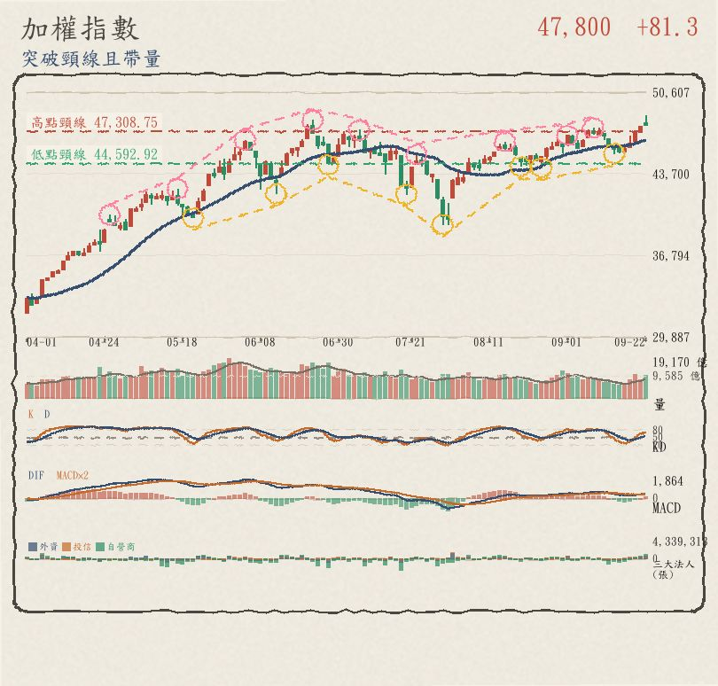
圖說：加權指數日 K（與個股圖相同標記）：黃圈＝轉折低點、粉圈＝轉折高點、虛線小圈＝還沒確認的轉折、藍線＝月線 MA20、水平虛線＝高點／低點頸線。最後一根是資料日當天。
本區塊為公開資料的技術面觀察，不構成投資建議，
不報牌、不預測、不下買賣決策。成交金額為集中市場總成交金額（含 ETF／權證），
與頁首摘要的「上市個股成交金額」口徑不同。標籤是統計，不是評分、也不是推薦。
上市 vs 上櫃（同期快篩）
加權 +0.17% vs 櫃買 +0.63%（同向） → 同向
（兩個市場分開寫，不合併成一個數字；櫃買為 TPEX 公開資料）
櫃買歷史：TPEX 逐日回補 130 根；來源：櫃買中心 www/zh-tw/indexInfo/sectinx（逐日，官方；OpenAPI tpex_index 只回當月）
（TPEX OpenAPI 只回當月，故逐日回補；歷史不足就不算該條均線並標「資料不足」，不用錯數字）
近 20 個交易日大盤狀態回溯（最新在上）（點開看逐日主狀態／量比／量價象限）
用同一支程式回算最近 20 個交易日（主狀態 S1~S8 與量比 20 皆為當日收盤當時的判定，
不是事後調整）；量比 20 未公布的日子寫「—」。
好條件最多的（前 10）
不好條件最多的（前 10）
好條件（8 項）：站上月線、月線向上、底底高、頭頭高、突破頸線、相對大盤強、攻擊量（量增＋上漲）、守住今日高檔（距今日高點 1% 內）。
不好條件（8 項）：跌破前低、今日下跌、相對大盤弱、在月線之下、量增下跌（出貨）、貼近今日低點（1% 內）、跌破昨日低點、月線下彎。
兩邊都是同一組日線資料＋盤中即時價算出來的「符合項目數」，只是把方向相反的條件分開數；
條件數不是評分或推薦，不構成投資建議。
盤中爆量（估量比 ≥ 1.5）（34 上市 24／上櫃 10）
今日疲弱（跌幅前 10）（10 上市 7／上櫃 3）
逐檔（70 檔，依盤中成交金額排序）
聯發科 2454 上市
5190 +180.0（+3.59%）
高點墊高、底部不穩 盤中成交值 470.63 億・全榜第 1 名（上市第 1 名）・相對大盤 +3.02
好條件 6/8：站上月線、月線向上、頭頭高、突破頸線、相對大盤強、攻擊量（量增＋上漲）
不好條件 1/8：貼近今日低點（1% 內）
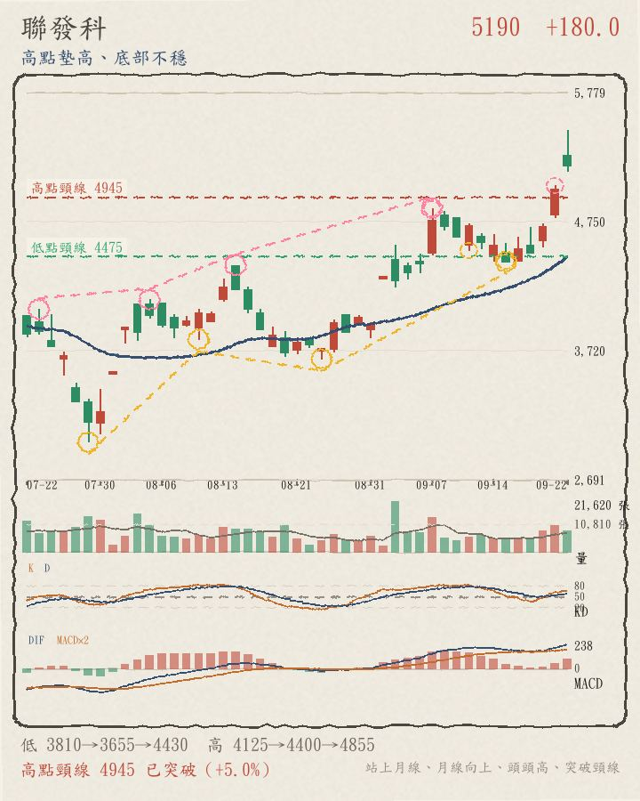
12:30 盤中 5190（+3.59%），比加權指數強 3.02 個百分點、站上月線 4397，已突破高點頸線 4945，高點還在墊高（但底部沒同步墊高）。
- 月線位置：現價 5190 在月線 4397 之上（+18.0%）；5 日線 4636 也在月線之上（短均在上）；月線向上
- 量能：以已過交易時間推估，今天成交量約是 20 日均量的 1.63 倍（爆量），比 20 日均量大不少；上漲又量增，量價配合
- 關鍵價位：高點頸線 4945 已站上；前一交易日高點 5035（高於 3.1%）；今天盤中高點 5480（低於 5.3%）；今天盤中低點 5150（高於 0.8%）
- 轉折結構：高點 4125、4400、4855 墊高（頭頭高），但低點 3810、3655、4430 沒有同步墊高；還沒確認的轉折低點 09-10 4520、09-15 4430；還沒確認的轉折高點 09-07 4855、09-21 5035（圖上虛線小圈）
聯電 2303 上市
162.5 +5.5（+3.50%）
上升趨勢（底底高＋頭頭高） 盤中成交值 401.99 億・全榜第 2 名（上市第 2 名）・相對大盤 +2.93
好條件 7/8：站上月線、月線向上、底底高、頭頭高、突破頸線、相對大盤強、攻擊量（量增＋上漲）
不好條件 0/8：無
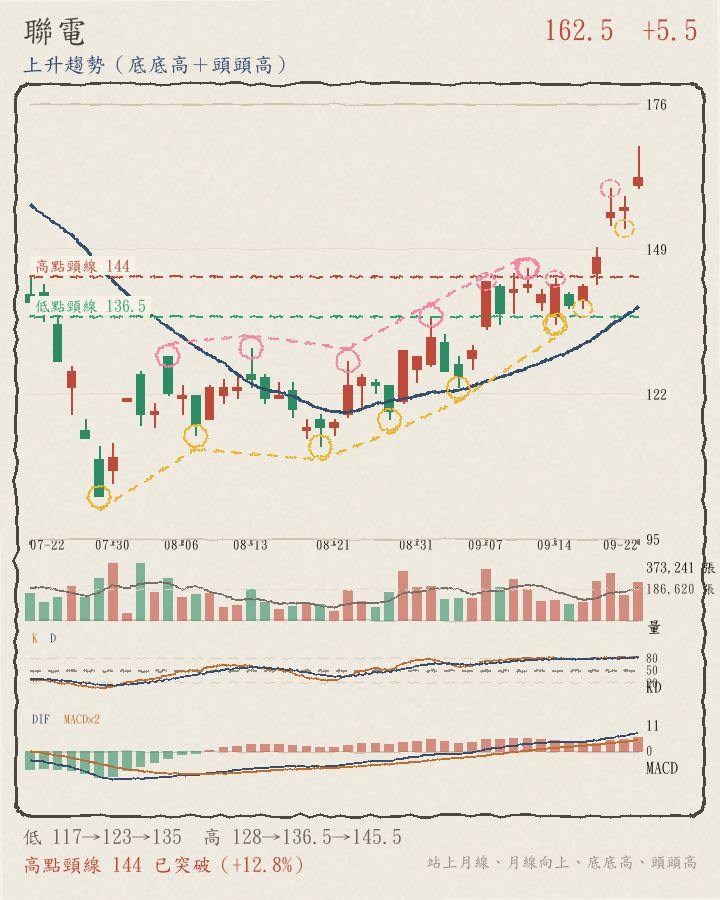
12:30 盤中 162.5（+3.50%），比加權指數強 2.93 個百分點、站上月線 136.375，已突破高點頸線 144，轉折結構仍是底底高＋頭頭高。
- 月線位置：現價 162.5 在月線 136.375 之上（+19.2%）；5 日線 148.2 也在月線之上（短均在上）；月線向上
- 量能：以已過交易時間推估，今天成交量約是 20 日均量的 1.67 倍（爆量），比 20 日均量大不少；上漲又量增，量價配合
- 關鍵價位：高點頸線 144 已站上；前一交易日高點 159（高於 2.2%）；今天盤中高點 168.5（低於 3.6%）；今天盤中低點 160.5（高於 1.2%）
- 轉折結構：低點 117、123、135 一路墊高、高點 128、136.5、145.5 也一路墊高，是底底高＋頭頭高；還沒確認的轉折低點 09-16 138、09-21 153；還沒確認的轉折高點 09-14 143.5、09-18 160.5（圖上虛線小圈）
友達 2409 上市
36.65 +3.3（+9.90%）
高點墊高、底部不穩 盤中成交值 382.3 億・全榜第 3 名（上市第 3 名）・相對大盤 +9.33
好條件 6/8：站上月線、月線向上、頭頭高、突破頸線、相對大盤強、攻擊量（量增＋上漲）
不好條件 0/8：無
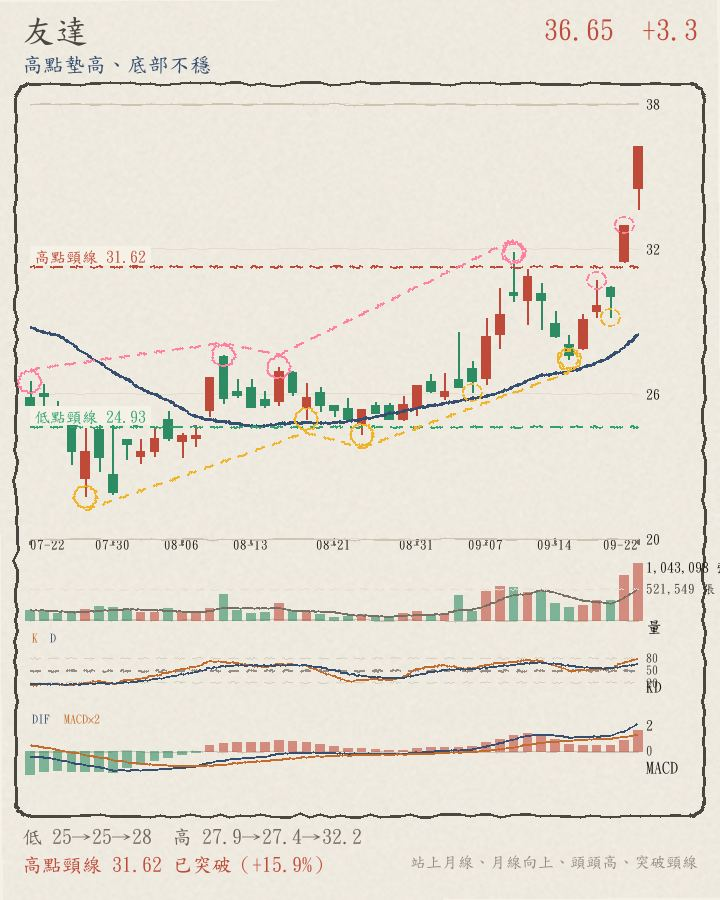
12:30 盤中 36.65（+9.90%），比加權指數強 9.33 個百分點、站上月線 28.247，已突破高點頸線 31.62，高點還在墊高（但底部沒同步墊高）。
- 月線位置：現價 36.65 在月線 28.247 之上（+29.8%）；5 日線 30.2 也在月線之上（短均在上）；月線向上
- 量能：以已過交易時間推估，今天成交量約是 20 日均量的 4.71 倍（爆量），比 20 日均量大不少；上漲又量增，量價配合
- 關鍵價位：高點頸線 31.62 已站上；前一交易日高點 33.35（高於 9.9%）；今天盤中高點 36.65（高於 0.0%）；今天盤中低點 34（高於 7.8%）
- 轉折結構：高點 27.9、27.4、32.2 墊高（頭頭高），但低點 25.25、24.6、27.75 沒有同步墊高；還沒確認的轉折低點 09-15 27.75、09-18 29.5；還沒確認的轉折高點 09-17 31.05、09-21 33.35（圖上虛線小圈）
台積電 2330 上市
2475 -5.0（-0.20%）
區間或轉弱 盤中成交值 343.36 億・全榜第 4 名（上市第 4 名）・相對大盤 -0.77
好條件 3/8：站上月線、月線向上、突破頸線
不好條件 3/8：今日下跌、相對大盤弱、貼近今日低點（1% 內）
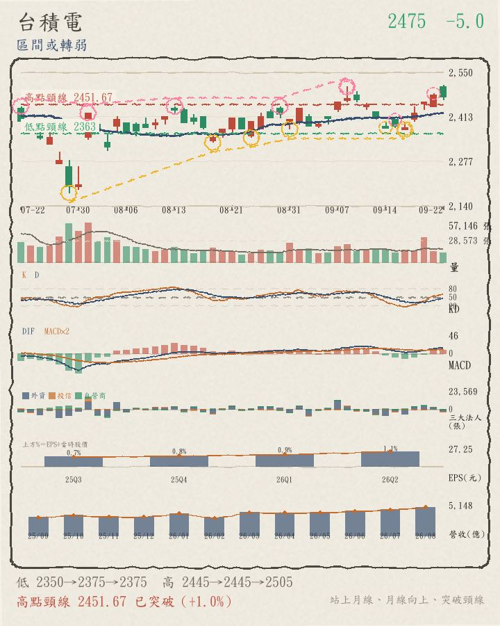
12:30 盤中 2475（-0.20%），比加權指數弱 0.77 個百分點、站上月線 2422，已突破高點頸線 2451.67，轉折還沒走出明顯方向。
- 月線位置：現價 2475 在月線 2422 之上（+2.2%）；5 日線 2426 也在月線之上（短均在上）；月線向上
- 量能：以已過交易時間推估，今天成交量約是 20 日均量的 0.98 倍（量平），跟 20 日均量差不多
- 關鍵價位：高點頸線 2451.67 已站上；前一交易日高點 2485（低於 0.4%）；今天盤中高點 2510（低於 1.4%）；今天盤中低點 2465（高於 0.4%）
- 轉折結構：低點 2350、2375、2375 與高點 2445、2445、2505 都沒有明顯遞增，屬於區間震盪或轉弱；還沒確認的轉折低點 09-14 2380、09-16 2375；還沒確認的轉折高點 09-15 2405、09-21 2485（圖上虛線小圈）
南亞科 2408 上市
502 -14.0（-2.71%）
區間或轉弱 盤中成交值 239.35 億・全榜第 5 名（上市第 5 名）・相對大盤 -3.28
好條件 0/8：無
不好條件 6/8：今日下跌、相對大盤弱、在月線之下、貼近今日低點（1% 內）、跌破昨日低點、月線下彎
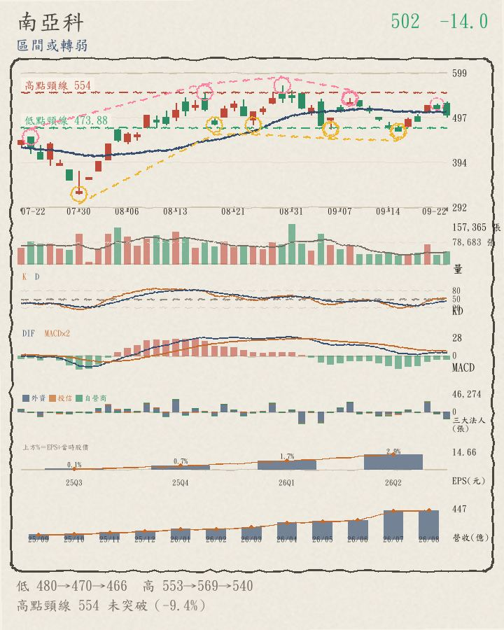
12:30 盤中 502（-2.71%），比加權指數弱 3.28 個百分點、跌破月線 509.975，離高點頸線 554 還差 9.4%，轉折還沒走出明顯方向。
- 月線位置：現價 502 在月線 509.975 之下（-1.6%）；5 日線 497.4 也在月線之下（短均在下）；月線向下
- 量能：以已過交易時間推估，今天成交量約是 20 日均量的 0.94 倍（量平），比 20 日均量少一些
- 關鍵價位：高點頸線 554 還沒突破，差 9.4%；前一交易日高點 528（低於 4.9%）；今天盤中高點 533（低於 5.8%）；今天盤中低點 498（高於 0.8%）
- 轉折結構：低點 480、470、465.5 與高點 553、569、540 都沒有明顯遞增，屬於區間震盪或轉弱；還沒確認的轉折低點 09-04 470、09-15 465.5；還沒確認的轉折高點 09-08 540、09-21 528（圖上虛線小圈）
量平
↑ 回上方清單
台達電 2308 上市
1920 +45.0（+2.40%）
區間或轉弱 盤中成交值 236.68 億・全榜第 6 名（上市第 6 名）・相對大盤 +1.83
好條件 4/8：站上月線、突破頸線、相對大盤強、攻擊量（量增＋上漲）
不好條件 1/8：月線下彎
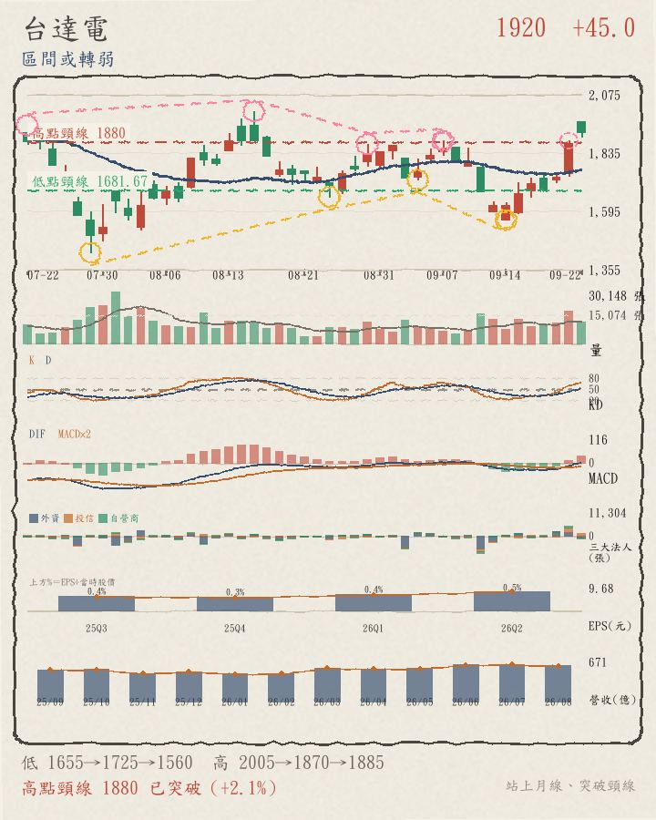
12:30 盤中 1920（+2.40%），比加權指數強 1.83 個百分點、站上月線 1756，已突破高點頸線 1880，轉折還沒走出明顯方向。
- 月線位置：現價 1920 在月線 1756 之上（+9.3%）；5 日線 1735 也在月線之下（短均在下）；月線向下
- 量能：以已過交易時間推估，今天成交量約是 20 日均量的 1.61 倍（爆量），比 20 日均量大不少；上漲又量增，量價配合
- 關鍵價位：高點頸線 1880 已站上；前一交易日高點 1885（高於 1.9%）；今天盤中高點 1965（低於 2.3%）；今天盤中低點 1900（高於 1.1%）
- 轉折結構：低點 1655、1725、1560 與高點 2005、1870、1885 都沒有明顯遞增，屬於區間震盪或轉弱；還沒確認的轉折低點 09-14 1560；還沒確認的轉折高點 09-07 1885、09-21 1885（圖上虛線小圈）
景碩 3189 上市
909 +82.0（+9.92%）
高點墊高、底部不穩 盤中成交值 225.52 億・全榜第 7 名（上市第 7 名）・相對大盤 +9.35
好條件 5/8：站上月線、頭頭高、突破頸線、相對大盤強、攻擊量（量增＋上漲）
不好條件 1/8：月線下彎
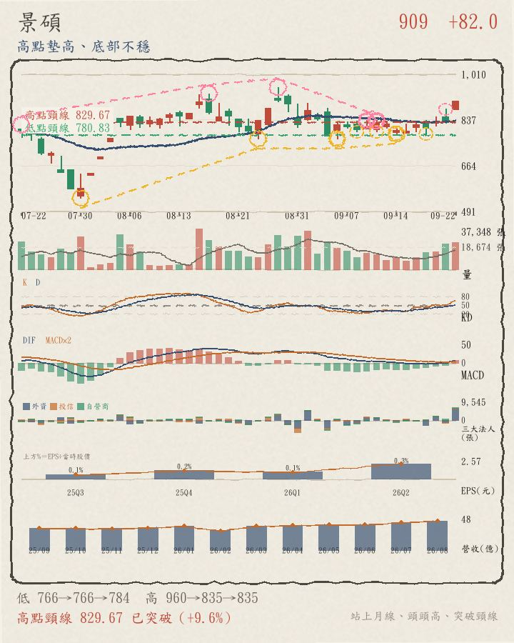
12:30 盤中 909（+9.92%），比加權指數強 9.35 個百分點、站上月線 830.7，已突破高點頸線 829.67，高點還在墊高（但底部沒同步墊高）。
- 月線位置：現價 909 在月線 830.7 之上（+9.4%）；5 日線 815.8 也在月線之下（短均在下）；月線向下
- 量能：以已過交易時間推估，今天成交量約是 20 日均量的 1.84 倍（爆量），比 20 日均量大不少；上漲又量增，量價配合
- 關鍵價位：高點頸線 829.67 已站上；前一交易日高點 878（高於 3.5%）；今天盤中高點 909（高於 0.0%）；今天盤中低點 875（高於 3.9%）
- 轉折結構：高點 960、835、835 墊高（頭頭高），但低點 766、766、784 沒有同步墊高；還沒確認的轉折低點 09-14 784、09-17 785；還沒確認的轉折高點 09-10 835、09-21 878（圖上虛線小圈）
群創 3481 上市
51 +0.6（+1.19%）
區間或轉弱 盤中成交值 223.1 億・全榜第 8 名（上市第 8 名）・相對大盤 +0.62
好條件 4/8：站上月線、月線向上、相對大盤強、攻擊量（量增＋上漲）
不好條件 0/8：無
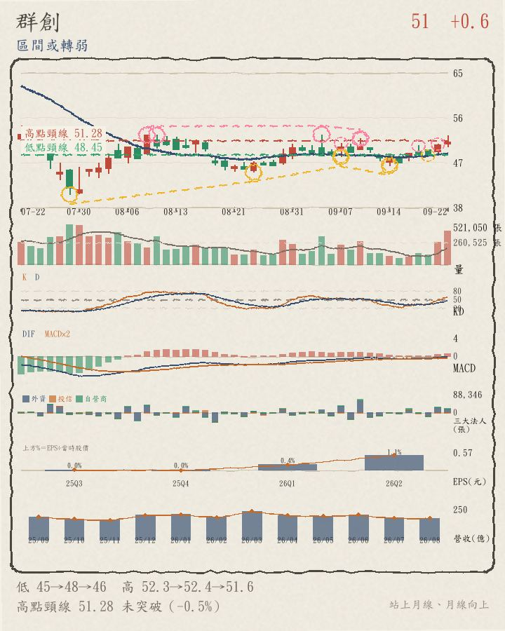
12:30 盤中 51（+1.19%），比加權指數強 0.62 個百分點、站上月線 48.452，離高點頸線 51.28 還差 0.5%，轉折還沒走出明顯方向。
- 月線位置：現價 51 在月線 48.452 之上（+5.3%）；5 日線 48.53 也在月線之上（短均在上）；月線向上
- 量能：以已過交易時間推估，今天成交量約是 20 日均量的 3.21 倍（爆量），比 20 日均量大不少；上漲又量增，量價配合
- 關鍵價位：高點頸線 51.28 還沒突破，差 0.5%；前一交易日高點 50.5（高於 1.0%）；今天盤中高點 52.2（低於 2.3%）；今天盤中低點 49.95（高於 2.1%）
- 轉折結構：低點 44.95、48、46.25 與高點 52.3、52.4、51.6 都沒有明顯遞增，屬於區間震盪或轉弱；還沒確認的轉折低點 09-14 46.25、09-18 48.25；還沒確認的轉折高點 09-17 50.2、09-21 50.5（圖上虛線小圈）
國巨* 2327 上市
579 +22.0（+3.95%）
區間或轉弱 盤中成交值 204.23 億・全榜第 9 名（上市第 9 名）・相對大盤 +3.38
好條件 3/8：站上月線、相對大盤強、攻擊量（量增＋上漲）
不好條件 1/8：月線下彎
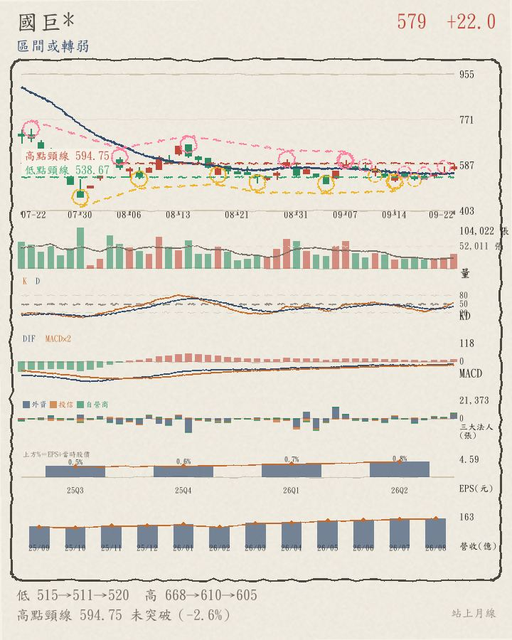
12:30 盤中 579（+3.95%），比加權指數強 3.38 個百分點、站上月線 552.5，離高點頸線 594.75 還差 2.6%，轉折還沒走出明顯方向。
- 月線位置：現價 579 在月線 552.5 之上（+4.8%）；5 日線 541.8 也在月線之下（短均在下）；月線向下
- 量能：以已過交易時間推估，今天成交量約是 20 日均量的 1.20 倍（量增），比 20 日均量大不少；上漲又量增，量價配合
- 關鍵價位：高點頸線 594.75 還沒突破，差 2.6%；前一交易日高點 579（高於 0.0%）；今天盤中高點 588（低於 1.5%）；今天盤中低點 566（高於 2.3%）
- 轉折結構：低點 515、511、520 與高點 668、610、605 都沒有明顯遞增，屬於區間震盪或轉弱；還沒確認的轉折低點 09-14 520、09-16 526；還沒確認的轉折高點 09-17 553、09-21 579（圖上虛線小圈）
京元電子 2449 上市
319 +17.5（+5.80%）
高點墊高、底部不穩 盤中成交值 197.4 億・全榜第 10 名（上市第 10 名）・相對大盤 +5.23
好條件 6/8：站上月線、月線向上、頭頭高、突破頸線、相對大盤強、攻擊量（量增＋上漲）
不好條件 0/8：無
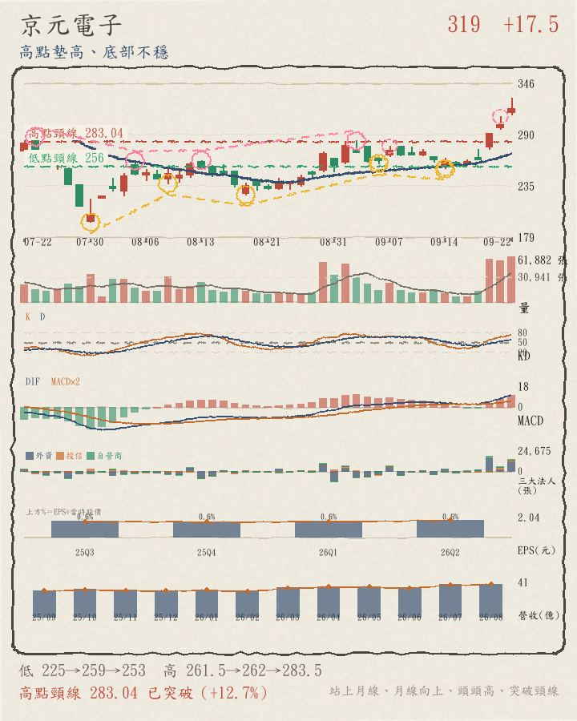
12:30 盤中 319（+5.80%），比加權指數強 5.23 個百分點、站上月線 265.725，已突破高點頸線 283.04，高點還在墊高（但底部沒同步墊高）。
- 月線位置：現價 319 在月線 265.725 之上（+20.1%）；5 日線 275.3 也在月線之上（短均在上）；月線向上
- 量能：以已過交易時間推估，今天成交量約是 20 日均量的 3.57 倍（爆量），比 20 日均量大不少；上漲又量增，量價配合
- 關鍵價位：高點頸線 283.04 已站上；前一交易日高點 310（高於 2.9%）；今天盤中高點 330（低於 3.3%）；今天盤中低點 312（高於 2.2%）
- 轉折結構：高點 261.5、262、283.5 墊高（頭頭高），但低點 225、259、253 沒有同步墊高；還沒確認的轉折低點 09-04 259、09-14 253；還沒確認的轉折高點 09-07 278、09-21 310（圖上虛線小圈）
臻鼎-KY 4958 上市
494.5 +24.5（+5.21%）
上升趨勢（底底高＋頭頭高） 盤中成交值 187.85 億・全榜第 11 名（上市第 11 名）・相對大盤 +4.64
好條件 6/8：站上月線、月線向上、底底高、頭頭高、相對大盤強、攻擊量（量增＋上漲）
不好條件 0/8：無
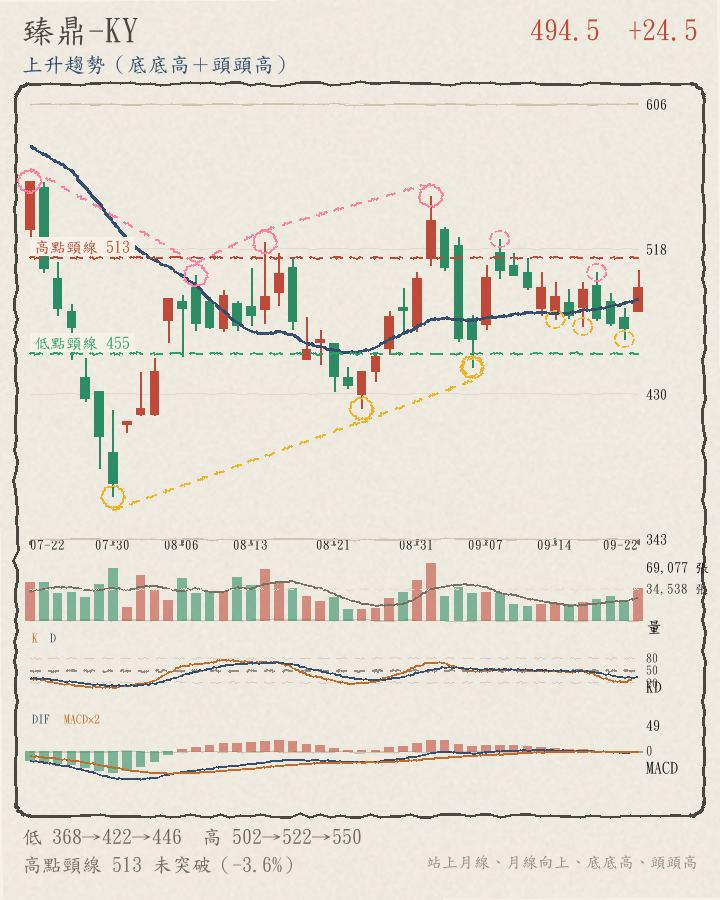
12:30 盤中 494.5（+5.21%），比加權指數強 4.64 個百分點、站上月線 485.025，離高點頸線 513 還差 3.6%，轉折結構仍是底底高＋頭頭高。
- 月線位置：現價 494.5 在月線 485.025 之上（+1.9%）；5 日線 478 也在月線之下（短均在下）；月線向上
- 量能：以已過交易時間推估，今天成交量約是 20 日均量的 1.78 倍（爆量），比 20 日均量大不少；上漲又量增，量價配合
- 關鍵價位：高點頸線 513 還沒突破，差 3.6%；前一交易日高點 482（高於 2.6%）；今天盤中高點 505（低於 2.1%）；今天盤中低點 480（高於 3.0%）
- 轉折結構：低點 368、421.5、446.5 一路墊高、高點 502、522、550 也一路墊高，是底底高＋頭頭高；還沒確認的轉折低點 09-16 471、09-21 463.5；還沒確認的轉折高點 09-08 524、09-17 504（圖上虛線小圈）
南電 8046 上市
1165 +105.0（+9.91%）
高點墊高、底部不穩 盤中成交值 183.79 億・全榜第 12 名（上市第 12 名）・相對大盤 +9.34
好條件 5/8：站上月線、頭頭高、突破頸線、相對大盤強、攻擊量（量增＋上漲）
不好條件 1/8：月線下彎
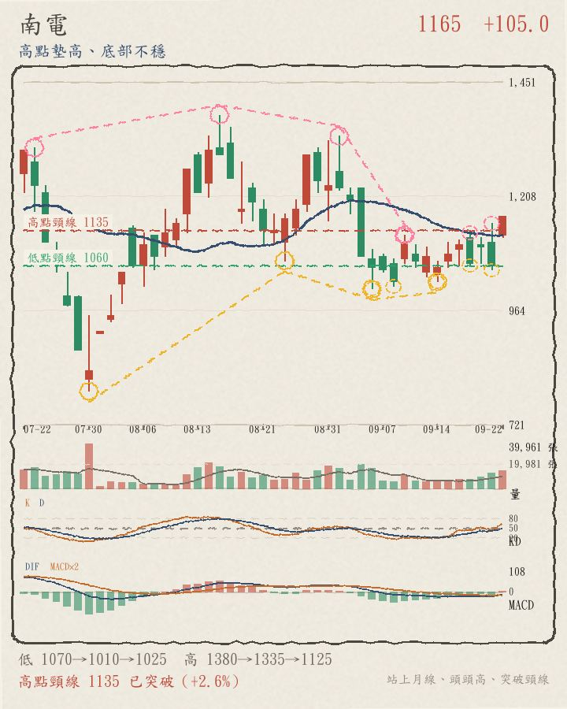
12:30 盤中 1165（+9.91%），比加權指數強 9.34 個百分點、站上月線 1123.5，已突破高點頸線 1135，高點還在墊高（但底部沒同步墊高）。
- 月線位置：現價 1165 在月線 1123.5 之上（+3.7%）；5 日線 1083 也在月線之下（短均在下）；月線向下
- 量能：以已過交易時間推估，今天成交量約是 20 日均量的 1.89 倍（爆量），比 20 日均量大不少；上漲又量增，量價配合
- 關鍵價位：高點頸線 1135 已站上；前一交易日高點 1150（高於 1.3%）；今天盤中高點 1165（高於 0.0%）；今天盤中低點 1120（高於 4.0%）
- 轉折結構：高點 1380、1335、1125 墊高（頭頭高），但低點 1070、1010、1025 沒有同步墊高；還沒確認的轉折低點 09-17 1060、09-21 1050；還沒確認的轉折高點 09-17 1130、09-21 1150（圖上虛線小圈）
環球晶 6488 上櫃
991 +60.0（+6.44%）
區間或轉弱 盤中成交值 150.88 億・全榜第 13 名（上櫃第 1 名）・相對大盤 +5.87
好條件 4/8：站上月線、突破頸線、相對大盤強、攻擊量（量增＋上漲）
不好條件 1/8：月線下彎
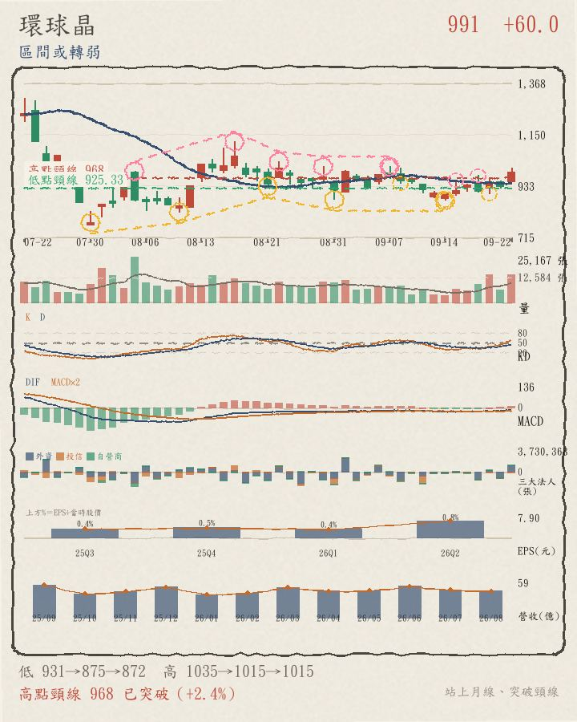
12:30 盤中 991（+6.44%），比加權指數強 5.87 個百分點、站上月線 943.9，已突破高點頸線 968，轉折還沒走出明顯方向。
- 月線位置：現價 991 在月線 943.9 之上（+5.0%）；5 日線 927.6 也在月線之下（短均在下）；月線向下
- 量能：以已過交易時間推估，今天成交量約是 20 日均量的 2.29 倍（爆量），比 20 日均量大不少；上漲又量增，量價配合
- 關鍵價位：高點頸線 968 已站上；前一交易日高點 954（高於 3.9%）；今天盤中高點 1010（低於 1.9%）；今天盤中低點 950（高於 4.3%）
- 轉折結構：低點 931、875、872 與高點 1035、1015、1015 都沒有明顯遞增，屬於區間震盪或轉弱；還沒確認的轉折低點 09-14 872、09-18 901；還沒確認的轉折高點 09-15 959、09-17 977（圖上虛線小圈）
穩懋 3105 上櫃
502 +11.5（+2.34%）
高點墊高、底部不穩 盤中成交值 144.92 億・全榜第 14 名（上櫃第 2 名）・相對大盤 +1.77
好條件 5/8：站上月線、月線向上、頭頭高、相對大盤強、攻擊量（量增＋上漲）
不好條件 0/8：無
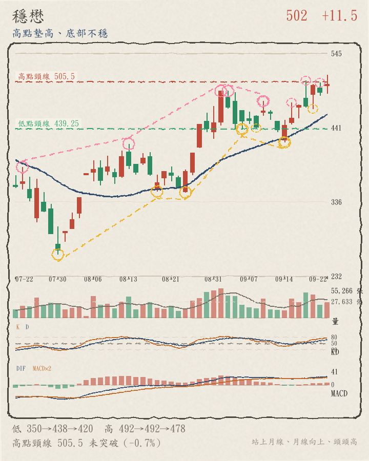
12:30 盤中 502（+2.34%），比加權指數強 1.77 個百分點、站上月線 453.025，離高點頸線 505.5 還差 0.7%，高點還在墊高（但底部沒同步墊高）。
- 月線位置：現價 502 在月線 453.025 之上（+10.8%）；5 日線 477.6 也在月線之上（短均在上）；月線向上
- 量能：以已過交易時間推估，今天成交量約是 20 日均量的 1.18 倍（量增），比 20 日均量大不少；上漲又量增，量價配合
- 關鍵價位：高點頸線 505.5 還沒突破，差 0.7%；前一交易日高點 504（低於 0.4%）；今天盤中高點 515（低於 2.5%）；今天盤中低點 489（高於 2.7%）
- 轉折結構：高點 492、492、478 墊高（頭頭高），但低點 349.5、438.5、420 沒有同步墊高；還沒確認的轉折低點 09-14 420、09-18 467；還沒確認的轉折高點 09-17 507、09-21 504（圖上虛線小圈）
南亞 1303 上市
234 -5.5（-2.30%）
底部墊高、未過前高 盤中成交值 137.36 億・全榜第 15 名（上市第 13 名）・相對大盤 -2.87
好條件 3/8：站上月線、月線向上、底底高
不好條件 4/8：今日下跌、相對大盤弱、貼近今日低點（1% 內）、跌破昨日低點
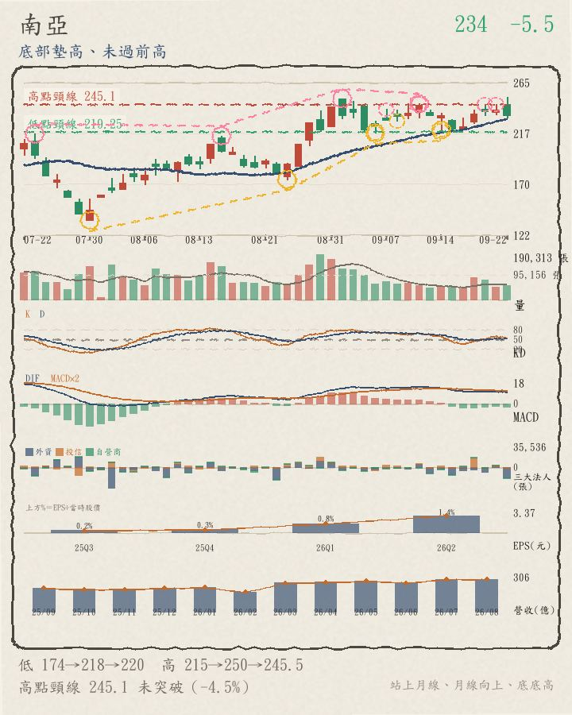
12:30 盤中 234（-2.30%），比加權指數弱 2.87 個百分點、站上月線 228.9，離高點頸線 245.1 還差 4.5%，底部還在墊高（但高點沒同步創高）。
- 月線位置：現價 234 在月線 228.9 之上（+2.2%）；5 日線 231.8 也在月線之上（短均在上）；月線向上
- 量能：以已過交易時間推估，今天成交量約是 20 日均量的 0.83 倍（量平），比 20 日均量少很多
- 關鍵價位：高點頸線 245.1 還沒突破，差 4.5%；前一交易日高點 245（低於 4.5%）；今天盤中高點 251.5（低於 7.0%）；今天盤中低點 232（高於 0.9%）
- 轉折結構：低點 174、218、220.5 墊高（底底高），但高點 215、250、245.5 沒有同步創高；還沒確認的轉折低點 09-08 229、09-14 220.5；還沒確認的轉折高點 09-18 245、09-21 245（圖上虛線小圈）
台燿 6274 上櫃
1405 -30.0（-2.09%）
區間或轉弱 盤中成交值 134.75 億・全榜第 16 名（上櫃第 3 名）・相對大盤 -2.66
好條件 1/8：站上月線
不好條件 5/8：今日下跌、相對大盤弱、量增下跌（出貨）、貼近今日低點（1% 內）、月線下彎
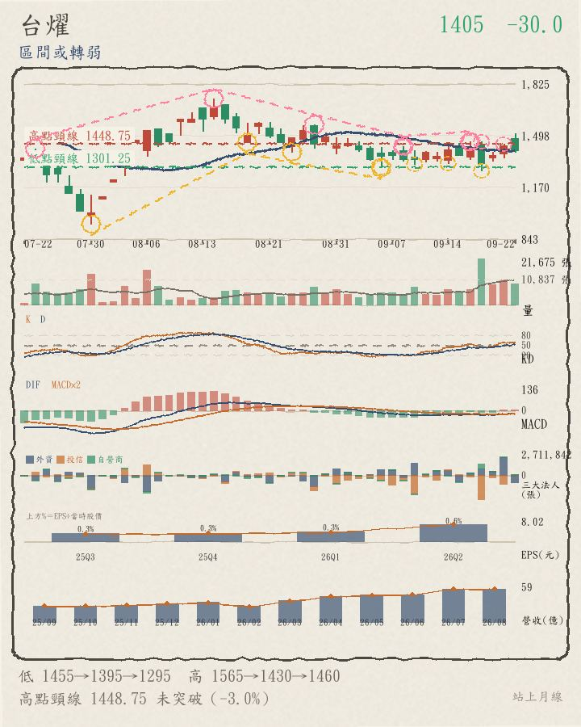
12:30 盤中 1405（-2.09%），比加權指數弱 2.66 個百分點、站上月線 1404.75，離高點頸線 1448.75 還差 3.0%，轉折還沒走出明顯方向。
- 月線位置：現價 1405 在月線 1404.75 之上（+0.0%）；5 日線 1382 也在月線之下（短均在下）；月線向下
- 量能：以已過交易時間推估，今天成交量約是 20 日均量的 1.86 倍（爆量），比 20 日均量大不少；下跌卻量增，量價背離
- 關鍵價位：高點頸線 1448.75 還沒突破，差 3.0%；前一交易日高點 1445（低於 2.8%）；今天盤中高點 1510（低於 7.0%）；今天盤中低點 1395（高於 0.7%）
- 轉折結構：低點 1455、1395、1295 與高點 1565、1430、1460 都沒有明顯遞增，屬於區間震盪或轉弱；還沒確認的轉折低點 09-14 1320、09-17 1275；還沒確認的轉折高點 09-17 1460、09-21 1445（圖上虛線小圈）
華邦電 2344 上市
172.5 -1.5（-0.86%）
區間或轉弱 盤中成交值 133.41 億・全榜第 17 名（上市第 14 名）・相對大盤 -1.43
好條件 0/8：無
不好條件 6/8：今日下跌、相對大盤弱、在月線之下、貼近今日低點（1% 內）、跌破昨日低點、月線下彎
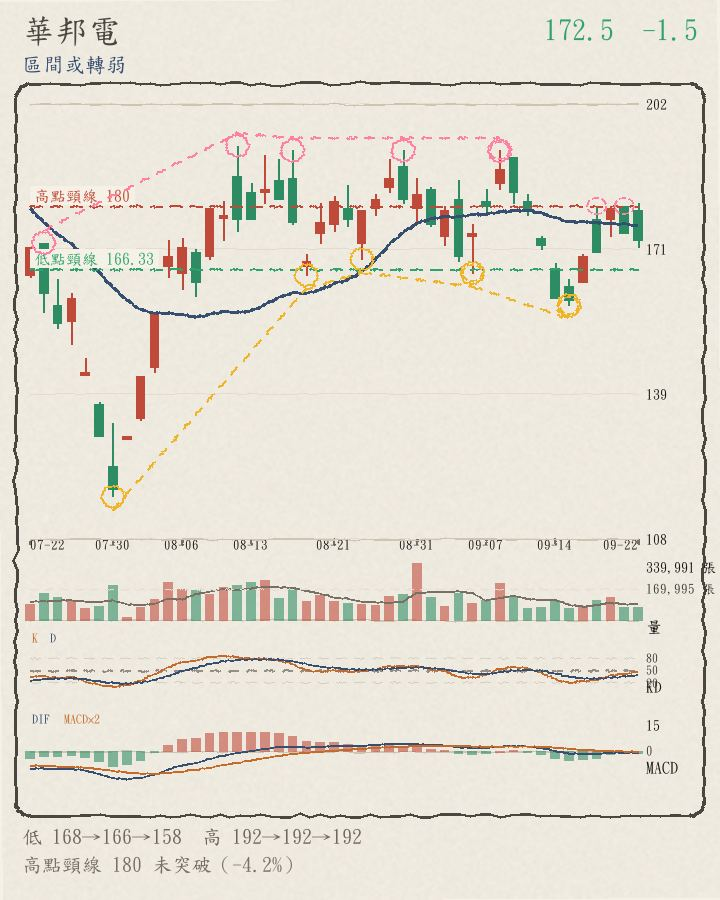
12:30 盤中 172.5（-0.86%），比加權指數弱 1.43 個百分點、跌破月線 176.125，離高點頸線 180 還差 4.2%，轉折還沒走出明顯方向。
- 月線位置：現價 172.5 在月線 176.125 之下（-2.1%）；5 日線 170.4 也在月線之下（短均在下）；月線向下
- 量能：以已過交易時間推估，今天成交量約是 20 日均量的 0.79 倍（量平），比 20 日均量少很多
- 關鍵價位：高點頸線 180 還沒突破，差 4.2%；前一交易日高點 180（低於 4.2%）；今天盤中高點 180.5（低於 4.4%）；今天盤中低點 171（高於 0.9%）
- 轉折結構：低點 168.5、165.5、158.5 與高點 192、192、192 都沒有明顯遞增，屬於區間震盪或轉弱；還沒確認的轉折低點 09-04 165.5、09-15 158.5；還沒確認的轉折高點 09-17 180、09-21 180（圖上虛線小圈）
量平
↑ 回上方清單
日月光投控 3711 上市
694 +31.0（+4.68%）
上升趨勢（底底高＋頭頭高） 盤中成交值 133.35 億・全榜第 18 名（上市第 15 名）・相對大盤 +4.11
好條件 7/8：站上月線、月線向上、底底高、頭頭高、突破頸線、相對大盤強、攻擊量（量增＋上漲）
不好條件 1/8：貼近今日低點（1% 內）
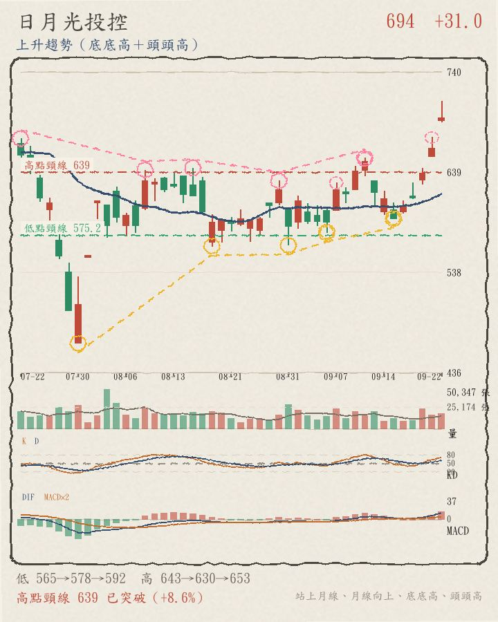
12:30 盤中 694（+4.68%），比加權指數強 4.11 個百分點、站上月線 612，已突破高點頸線 639，轉折結構仍是底底高＋頭頭高。
- 月線位置：現價 694 在月線 612 之上（+13.4%）；5 日線 622.4 也在月線之上（短均在上）；月線向上
- 量能：以已過交易時間推估，今天成交量約是 20 日均量的 1.53 倍（爆量），比 20 日均量大不少；上漲又量增，量價配合
- 關鍵價位：高點頸線 639 已站上；前一交易日高點 674（高於 3.0%）；今天盤中高點 711（低於 2.4%）；今天盤中低點 690（高於 0.6%）
- 轉折結構：低點 565、578、592 一路墊高、高點 643、630、653 也一路墊高，是底底高＋頭頭高；還沒確認的轉折低點 09-04 578、09-15 592；還沒確認的轉折高點 09-10 653、09-21 674（圖上虛線小圈）
大立光 3008 上市
6480 +80.0（+1.25%）
高點墊高、底部不穩 盤中成交值 125.84 億・全榜第 19 名（上市第 16 名）・相對大盤 +0.68
好條件 4/8：月線向上、頭頭高、相對大盤強、攻擊量（量增＋上漲）
不好條件 1/8：在月線之下
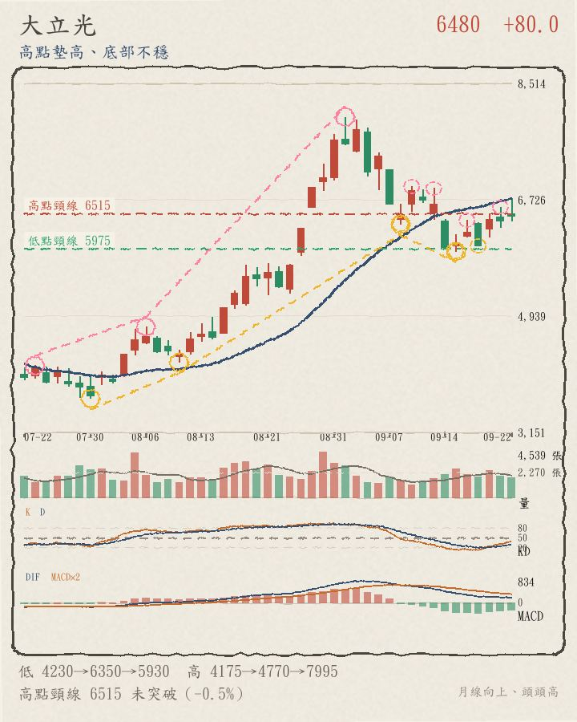
12:30 盤中 6480（+1.25%），比加權指數強 0.68 個百分點、跌破月線 6705.75，離高點頸線 6515 還差 0.5%，高點還在墊高（但底部沒同步墊高）。
- 月線位置：現價 6480 在月線 6705.75 之下（-3.4%）；5 日線 6226 也在月線之下（短均在下）；月線向上
- 量能：以已過交易時間推估，今天成交量約是 20 日均量的 1.10 倍（量增），比 20 日均量大一些；上漲又量增，量價配合
- 關鍵價位：高點頸線 6515 還沒突破，差 0.5%；前一交易日高點 6615（低於 2.0%）；今天盤中高點 6750（低於 4.0%）；今天盤中低點 6400（高於 1.2%）
- 轉折結構：高點 4175、4770、7995 墊高（頭頭高），但低點 4230、6350、5930 沒有同步墊高；還沒確認的轉折低點 09-15 5930、09-17 6020；還沒確認的轉折高點 09-16 6415、09-21 6615（圖上虛線小圈）
南茂 8150 上市
105 +2.0（+1.94%）
高點墊高、底部不穩 盤中成交值 123.34 億・全榜第 20 名（上市第 17 名）・相對大盤 +1.37
好條件 6/8：站上月線、月線向上、頭頭高、突破頸線、相對大盤強、攻擊量（量增＋上漲）
不好條件 0/8：無
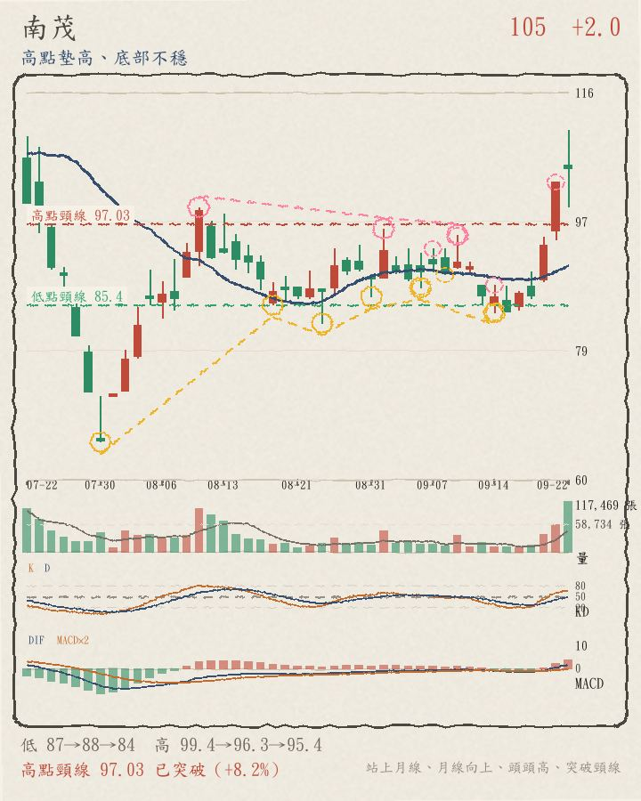
12:30 盤中 105（+1.94%），比加權指數強 1.37 個百分點、站上月線 90.18，已突破高點頸線 97.03，高點還在墊高（但底部沒同步墊高）。
- 月線位置：現價 105 在月線 90.18 之上（+16.4%）；5 日線 91.04 也在月線之上（短均在上）；月線向上
- 量能：以已過交易時間推估，今天成交量約是 20 日均量的 7.22 倍（爆量），比 20 日均量大不少；上漲又量增，量價配合
- 關鍵價位：高點頸線 97.03 已站上；前一交易日高點 103（高於 1.9%）；今天盤中高點 110.5（低於 5.0%）；今天盤中低點 99.5（高於 5.5%）
- 轉折結構：高點 99.4、96.3、95.4 墊高（頭頭高），但低點 86.6、87.9、84.3 沒有同步墊高；還沒確認的轉折低點 09-08 89.7、09-14 84.3；還沒確認的轉折高點 09-14 88.2、09-21 103（圖上虛線小圈）
貿聯-KY 3665 上市
2255 -45.0（-1.96%）
區間或轉弱 盤中成交值 109.66 億・全榜第 21 名（上市第 18 名）・相對大盤 -2.53
好條件 1/8：站上月線
不好條件 4/8：今日下跌、相對大盤弱、量增下跌（出貨）、月線下彎
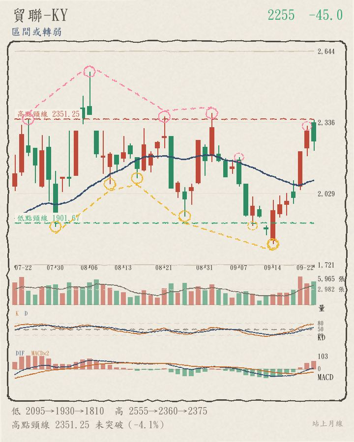
12:30 盤中 2255（-1.96%），比加權指數弱 2.53 個百分點、站上月線 2076.5，離高點頸線 2351.25 還差 4.1%，轉折還沒走出明顯方向。
- 月線位置：現價 2255 在月線 2076.5 之上（+8.6%）；5 日線 2099 也在月線之上（短均在上）；月線向下
- 量能：以已過交易時間推估，今天成交量約是 20 日均量的 2.14 倍（爆量），比 20 日均量大不少；下跌卻量增，量價背離
- 關鍵價位：高點頸線 2351.25 還沒突破，差 4.1%；前一交易日高點 2320（低於 2.8%）；今天盤中高點 2345（低於 3.8%）；今天盤中低點 2215（高於 1.8%）
- 轉折結構：低點 2095、1930、1810 與高點 2555、2360、2375 都沒有明顯遞增，屬於區間震盪或轉弱；還沒確認的轉折低點 09-09 1890、09-14 1810；還沒確認的轉折高點 09-07 2185、09-21 2320（圖上虛線小圈）
合晶 6182 上櫃
120 +5.0（+4.35%）
區間或轉弱 盤中成交值 109.42 億・全榜第 22 名（上櫃第 4 名）・相對大盤 +3.78
好條件 5/8：站上月線、月線向上、突破頸線、相對大盤強、攻擊量（量增＋上漲）
不好條件 0/8：無
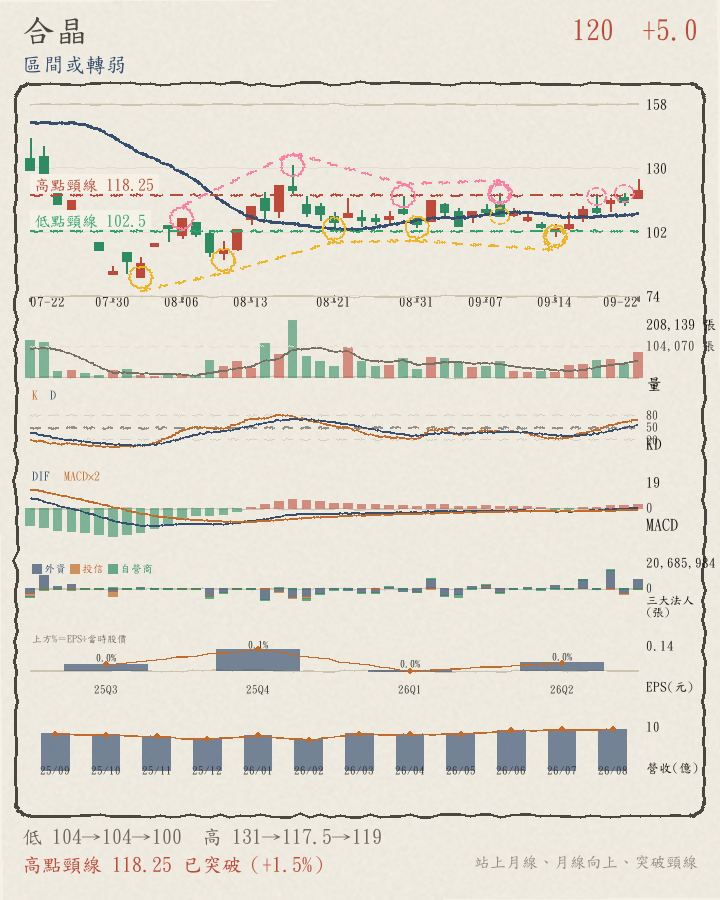
12:30 盤中 120（+4.35%），比加權指數強 3.78 個百分點、站上月線 109.4，已突破高點頸線 118.25，轉折還沒走出明顯方向。
- 月線位置：現價 120 在月線 109.4 之上（+9.7%）；5 日線 111.8 也在月線之上（短均在上）；月線向上
- 量能：以已過交易時間推估，今天成交量約是 20 日均量的 2.47 倍（爆量），比 20 日均量大不少；上漲又量增，量價配合
- 關鍵價位：高點頸線 118.25 已站上；前一交易日高點 119（高於 0.8%）；今天盤中高點 125（低於 4.0%）；今天盤中低點 116.5（高於 3.0%）
- 轉折結構：低點 103.5、104、100 與高點 131、117.5、119 都沒有明顯遞增，屬於區間震盪或轉弱；還沒確認的轉折低點 09-08 109、09-14 100；還沒確認的轉折高點 09-17 117.5、09-21 119（圖上虛線小圈）
緯創 3231 上市
180.5 -6.0（-3.22%）
底部墊高、未過前高 盤中成交值 103.6 億・全榜第 23 名（上市第 19 名）・相對大盤 -3.79
好條件 2/8：月線向上、底底高
不好條件 5/8：今日下跌、相對大盤弱、在月線之下、量增下跌（出貨）、跌破昨日低點
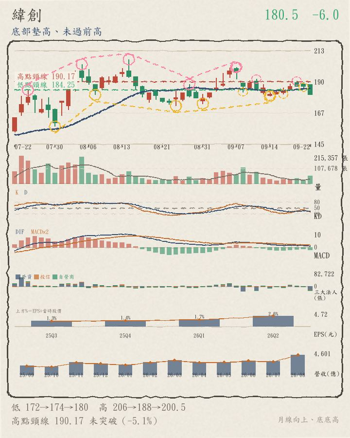
12:30 盤中 180.5（-3.22%），比加權指數弱 3.79 個百分點、跌破月線 184.95，離高點頸線 190.17 還差 5.1%，底部還在墊高（但高點沒同步創高）。
- 月線位置：現價 180.5 在月線 184.95 之下（-2.4%）；5 日線 185 也在月線之上（短均在上）；月線向上
- 量能：以已過交易時間推估，今天成交量約是 20 日均量的 1.41 倍（量增），比 20 日均量大不少；下跌卻量增，量價背離
- 關鍵價位：高點頸線 190.17 還沒突破，差 5.1%；前一交易日高點 189.5（低於 4.7%）；今天盤中高點 188（低於 4.0%）；今天盤中低點 180.5（高於 0.0%）
- 轉折結構：低點 172.5、174、179.5 墊高（底底高），但高點 206、188、200.5 沒有同步創高；還沒確認的轉折低點 09-16 181、09-21 186；還沒確認的轉折高點 09-10 192、09-18 190.5（圖上虛線小圈）
頎邦 6147 上櫃
221 -3.0（-1.34%）
高點墊高、底部不穩 盤中成交值 102.6 億・全榜第 24 名（上櫃第 5 名）・相對大盤 -1.91
好條件 4/8：站上月線、月線向上、頭頭高、突破頸線
不好條件 4/8：今日下跌、相對大盤弱、量增下跌（出貨）、跌破昨日低點
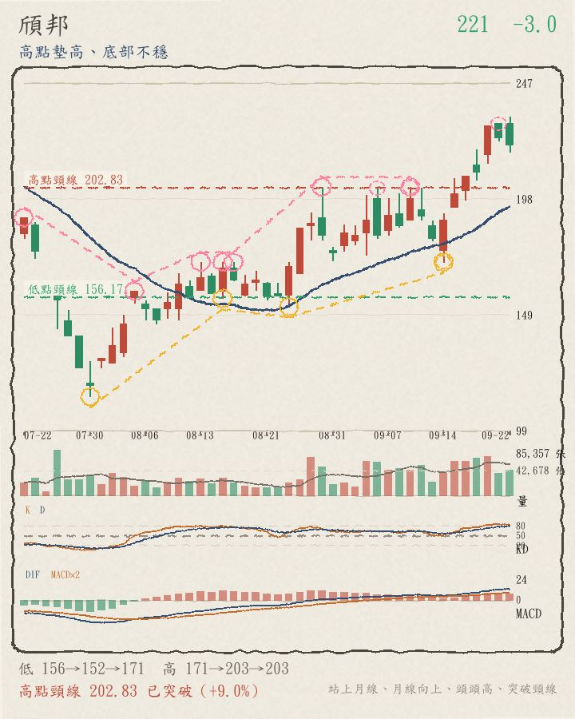
12:30 盤中 221（-1.34%），比加權指數弱 1.91 個百分點、站上月線 192.175，已突破高點頸線 202.83，高點還在墊高（但底部沒同步墊高）。
- 月線位置：現價 221 在月線 192.175 之上（+15.0%）；5 日線 214 也在月線之上（短均在上）；月線向上
- 量能：以已過交易時間推估，今天成交量約是 20 日均量的 1.30 倍（量增），比 20 日均量大不少；下跌卻量增，量價背離
- 關鍵價位：高點頸線 202.83 已站上；前一交易日高點 230（低於 3.9%）；今天盤中高點 233（低於 5.2%）；今天盤中低點 218（高於 1.4%）
- 轉折結構：高點 171、203、203 墊高（頭頭高），但低點 155.5、152、171 沒有同步墊高；還沒確認的轉折低點 09-14 171；還沒確認的轉折高點 09-09 203、09-21 230（圖上虛線小圈）
欣興 3037 上市
1120 +100.0（+9.80%）
高點墊高、底部不穩 盤中成交值 101.15 億・全榜第 25 名（上市第 20 名）・相對大盤 +9.23
好條件 4/8：站上月線、頭頭高、突破頸線、相對大盤強
不好條件 1/8：月線下彎
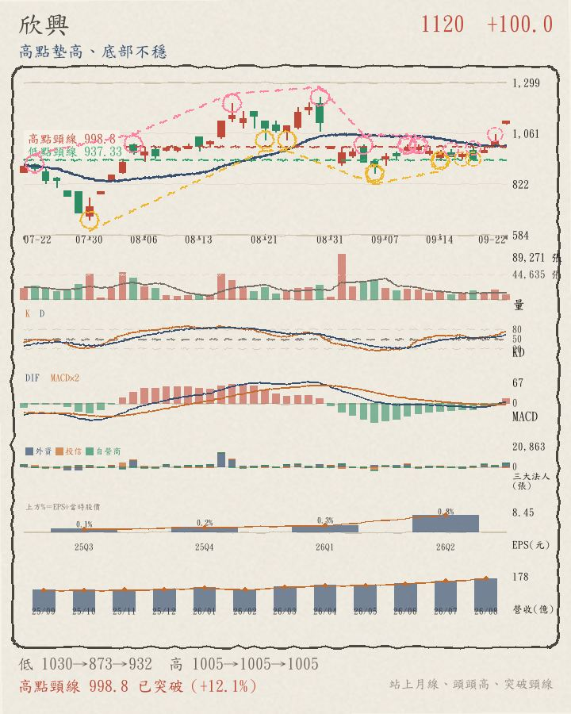
12:30 盤中 1120（+9.80%），比加權指數強 9.23 個百分點、站上月線 1000.15，已突破高點頸線 998.8，高點還在墊高（但底部沒同步墊高）。
- 月線位置：現價 1120 在月線 1000.15 之上（+12.0%）；5 日線 970.6 也在月線之下（短均在下）；月線向下
- 量能：以已過交易時間推估，今天成交量約是 20 日均量的 0.53 倍（量縮），比 20 日均量少很多；上漲但量縮，量價背離
- 關鍵價位：高點頸線 998.8 已站上；前一交易日高點 1055（高於 6.2%）；今天盤中高點 1120（高於 0.0%）；今天盤中低點 1105（高於 1.4%）
- 轉折結構：高點 1005、1005、1005 墊高（頭頭高），但低點 1030、873、932 沒有同步墊高；還沒確認的轉折低點 09-16 940、09-17 940；還沒確認的轉折高點 09-17 993、09-21 1055（圖上虛線小圈）
聯茂 6213 上市
544 +2.0（+0.37%）
區間或轉弱 盤中成交值 98.2 億・全榜第 26 名（上市第 21 名）・相對大盤 -0.20
好條件 3/8：站上月線、月線向上、攻擊量（量增＋上漲）
不好條件 2/8：相對大盤弱、貼近今日低點（1% 內）
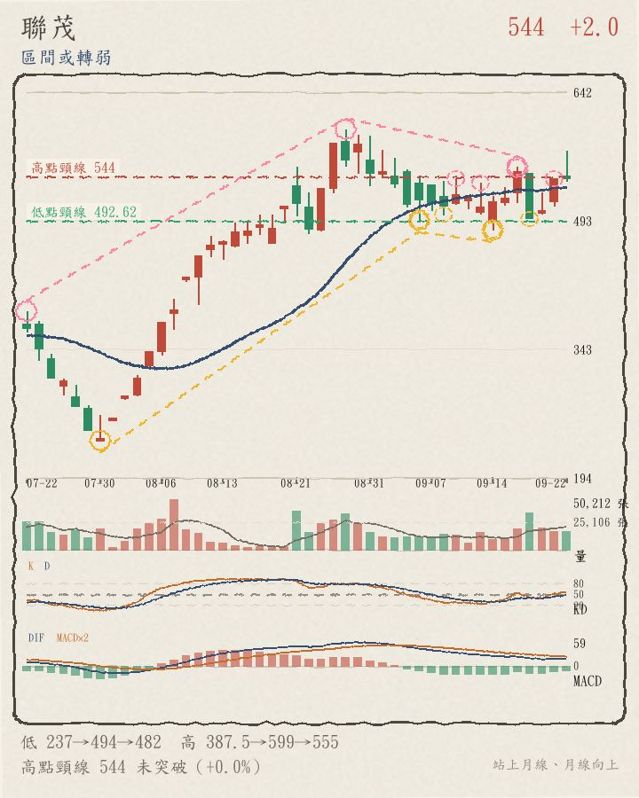
12:30 盤中 544（+0.37%），比加權指數弱 0.20 個百分點、站上月線 531.05，離高點頸線 544 還差 0.0%，轉折還沒走出明顯方向。
- 月線位置：現價 544 在月線 531.05 之上（+2.4%）；5 日線 522.2 也在月線之下（短均在下）；月線向上
- 量能：以已過交易時間推估，今天成交量約是 20 日均量的 1.26 倍（量增），比 20 日均量大不少；上漲又量增，量價配合
- 關鍵價位：高點頸線 544 還沒突破，差 0.0%；前一交易日高點 542（高於 0.4%）；今天盤中高點 574（低於 5.2%）；今天盤中低點 539（高於 0.9%）
- 轉折結構：低點 237、493.5、482 與高點 387.5、599、555 都沒有明顯遞增，屬於區間震盪或轉弱；還沒確認的轉折低點 09-14 482、09-17 495；還沒確認的轉折高點 09-16 555、09-21 542（圖上虛線小圈）
世芯-KY 3661 上市
3705 +40.0（+1.09%）
區間或轉弱 盤中成交值 97 億・全榜第 27 名（上市第 22 名）・相對大盤 +0.52
好條件 2/8：相對大盤強、攻擊量（量增＋上漲）
不好條件 3/8：在月線之下、貼近今日低點（1% 內）、月線下彎
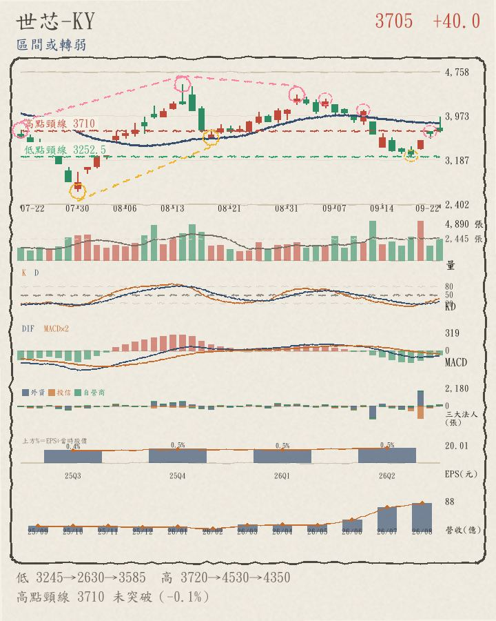
12:30 盤中 3705（+1.09%），比加權指數強 0.52 個百分點、跌破月線 3852.5，離高點頸線 3710 還差 0.1%，轉折還沒走出明顯方向。
- 月線位置：現價 3705 在月線 3852.5 之下（-3.8%）；5 日線 3440 也在月線之下（短均在下）；月線向下
- 量能：以已過交易時間推估，今天成交量約是 20 日均量的 1.50 倍（爆量），比 20 日均量大不少；上漲又量增，量價配合
- 關鍵價位：高點頸線 3710 還沒突破，差 0.1%；前一交易日高點 3700（高於 0.1%）；今天盤中高點 3950（低於 6.2%）；今天盤中低點 3680（高於 0.7%）
- 轉折結構：低點 3245、2630、3585 與高點 3720、4530、4350 都沒有明顯遞增，屬於區間震盪或轉弱；還沒確認的轉折低點 09-17 3260；還沒確認的轉折高點 09-10 4075、09-21 3700（圖上虛線小圈）
旺矽 6223 上櫃
5315 -180.0（-3.28%）
區間或轉弱 盤中成交值 94.93 億・全榜第 28 名（上櫃第 6 名）・相對大盤 -3.85
好條件 1/8：月線向上
不好條件 6/8：跌破前低、今日下跌、相對大盤弱、在月線之下、量增下跌（出貨）、跌破昨日低點
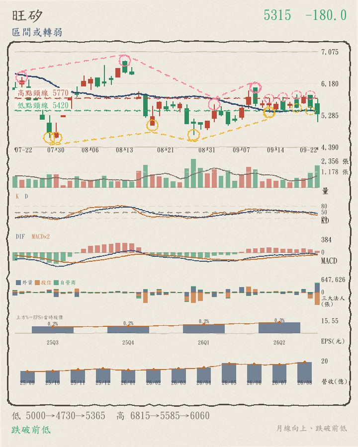
12:30 盤中 5315（-3.28%），比加權指數弱 3.85 個百分點、跌破月線 5418，離高點頸線 5770 還差 7.9%，轉折還沒走出明顯方向。
- 月線位置：現價 5315 在月線 5418 之下（-1.9%）；5 日線 5567 也在月線之上（短均在上）；月線向上
- 量能：以已過交易時間推估，今天成交量約是 20 日均量的 2.26 倍（爆量），比 20 日均量大不少；下跌卻量增，量價背離
- 關鍵價位：已跌破前一個轉折低點；高點頸線 5770 還在現價上方 7.9%；前一交易日高點 5850（低於 9.1%）；今天盤中高點 5735（低於 7.3%）；今天盤中低點 5090（高於 4.4%）
- 轉折結構：低點 5000、4730、5365 與高點 6815、5585、6060 都沒有明顯遞增，屬於區間震盪或轉弱；還沒確認的轉折低點 09-17 5485、09-21 5410；還沒確認的轉折高點 09-17 5860、09-21 5850（圖上虛線小圈）
高力 8996 上市
1655 +150.0（+9.97%）
上升趨勢（底底高＋頭頭高） 盤中成交值 90.02 億・全榜第 29 名（上市第 23 名）・相對大盤 +9.40
好條件 7/8：站上月線、月線向上、底底高、頭頭高、突破頸線、相對大盤強、攻擊量（量增＋上漲）
不好條件 0/8：無
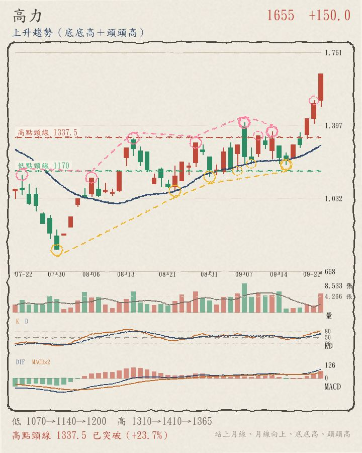
12:30 盤中 1655（+9.97%），比加權指數強 9.40 個百分點、站上月線 1275.75，已突破高點頸線 1337.5，轉折結構仍是底底高＋頭頭高。
- 月線位置：現價 1655 在月線 1275.75 之上（+29.7%）；5 日線 1351 也在月線之上（短均在上）；月線向上
- 量能：以已過交易時間推估，今天成交量約是 20 日均量的 1.71 倍（爆量），比 20 日均量大不少；上漲又量增，量價配合
- 關鍵價位：高點頸線 1337.5 已站上；前一交易日高點 1520（高於 8.9%）；今天盤中高點 1655（高於 0.0%）；今天盤中低點 1490（高於 11.1%）
- 轉折結構：低點 1070、1140、1200 一路墊高、高點 1310、1410、1365 也一路墊高，是底底高＋頭頭高；還沒確認的轉折低點 09-08 1205、09-15 1200；還沒確認的轉折高點 09-11 1365、09-21 1520（圖上虛線小圈）
群聯 8299 上櫃
2185 +35.0（+1.63%）
高點墊高、底部不穩 盤中成交值 88.69 億・全榜第 30 名（上櫃第 7 名）・相對大盤 +1.06
好條件 4/8：站上月線、頭頭高、相對大盤強、攻擊量（量增＋上漲）
不好條件 2/8：貼近今日低點（1% 內）、月線下彎
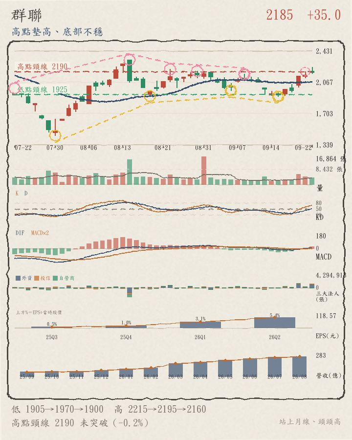
12:30 盤中 2185（+1.63%），比加權指數強 1.06 個百分點、站上月線 2065.25，離高點頸線 2190 還差 0.2%，高點還在墊高（但底部沒同步墊高）。
- 月線位置：現價 2185 在月線 2065.25 之上（+5.8%）；5 日線 2033 也在月線之下（短均在下）；月線向下
- 量能：以已過交易時間推估，今天成交量約是 20 日均量的 1.33 倍（量增），比 20 日均量大不少；上漲又量增，量價配合
- 關鍵價位：高點頸線 2190 還沒突破，差 0.2%；前一交易日高點 2190（低於 0.2%）；今天盤中高點 2240（低於 2.5%）；今天盤中低點 2165（高於 0.9%）
- 轉折結構：高點 2215、2195、2160 墊高（頭頭高），但低點 1905、1970、1900 沒有同步墊高；還沒確認的轉折低點 09-04 1970、09-15 1900；還沒確認的轉折高點 09-08 2160、09-21 2190（圖上虛線小圈）
緯穎 6669 上市
2095 -55.0（-2.56%）
上升趨勢（底底高＋頭頭高） 盤中成交值 88.05 億・全榜第 31 名（上市第 24 名）・相對大盤 -3.13
好條件 3/8：月線向上、底底高、頭頭高
不好條件 6/8：今日下跌、相對大盤弱、在月線之下、量增下跌（出貨）、貼近今日低點（1% 內）、跌破昨日低點
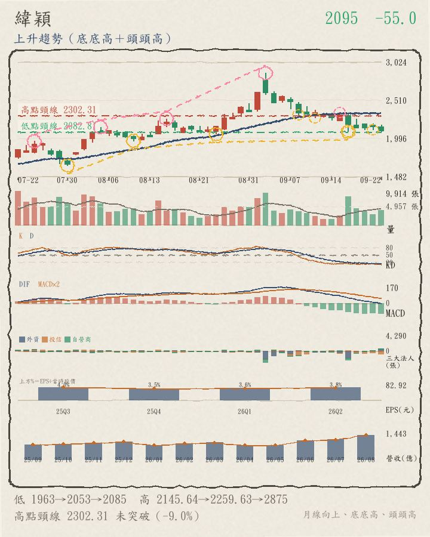
12:30 盤中 2095（-2.56%），比加權指數弱 3.13 個百分點、跌破月線 2338.05，離高點頸線 2302.31 還差 9.0%，轉折結構仍是底底高＋頭頭高。
- 月線位置：現價 2095 在月線 2338.05 之下（-10.4%）；5 日線 2181 也在月線之下（短均在下）；月線向上
- 量能：以已過交易時間推估，今天成交量約是 20 日均量的 1.24 倍（量增），比 20 日均量大不少；下跌卻量增，量價背離
- 關鍵價位：高點頸線 2302.31 還沒突破，差 9.0%；前一交易日高點 2190（低於 4.3%）；今天盤中高點 2180（低於 3.9%）；今天盤中低點 2090（高於 0.2%）
- 轉折結構：低點 1962.92、2053.44、2085 一路墊高、高點 2145.64、2259.63、2875 也一路墊高，是底底高＋頭頭高；還沒確認的轉折低點 09-16 2085、09-21 2110；還沒確認的轉折高點 09-15 2345（圖上虛線小圈）
全新 2455 上市
551 -21.0（-3.67%）
高點墊高、底部不穩 盤中成交值 80.6 億・全榜第 32 名（上市第 25 名）・相對大盤 -4.24
好條件 3/8：站上月線、月線向上、頭頭高
不好條件 3/8：今日下跌、相對大盤弱、量增下跌（出貨）
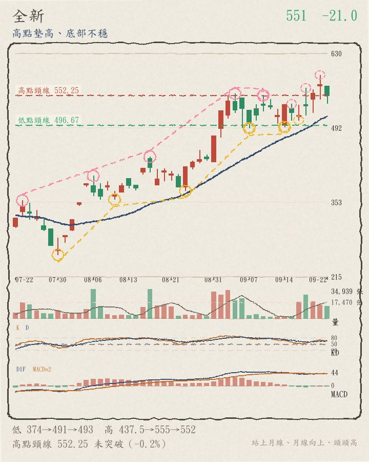
12:30 盤中 551（-3.67%），比加權指數弱 4.24 個百分點、站上月線 506.875，離高點頸線 552.25 還差 0.2%，高點還在墊高（但底部沒同步墊高）。
- 月線位置：現價 551 在月線 506.875 之上（+8.7%）；5 日線 539.4 也在月線之上（短均在上）；月線向上
- 量能：以已過交易時間推估，今天成交量約是 20 日均量的 1.57 倍（爆量），比 20 日均量大不少；下跌卻量增，量價背離
- 關鍵價位：高點頸線 552.25 還沒突破，差 0.2%；前一交易日高點 590（低於 6.6%）；今天盤中高點 570（低於 3.3%）；今天盤中低點 537（高於 2.6%）
- 轉折結構：高點 437.5、555、552 墊高（頭頭高），但低點 374.5、491、493 沒有同步墊高；還沒確認的轉折低點 09-14 493、09-16 506；還沒確認的轉折高點 09-17 566、09-21 590（圖上虛線小圈）
精材 3374 上櫃
487 +44.0（+9.93%）
高點墊高、底部不穩 盤中成交值 80.41 億・全榜第 33 名（上櫃第 8 名）・相對大盤 +9.36
好條件 6/8：站上月線、月線向上、頭頭高、突破頸線、相對大盤強、攻擊量（量增＋上漲）
不好條件 0/8：無
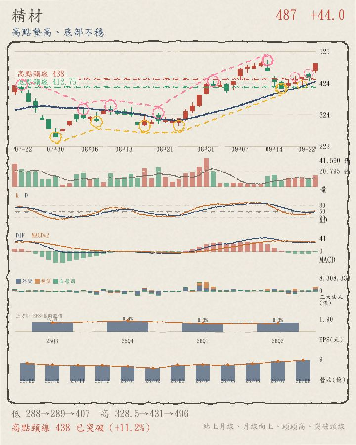
12:30 盤中 487（+9.93%），比加權指數強 9.36 個百分點、站上月線 421.4，已突破高點頸線 438，高點還在墊高（但底部沒同步墊高）。
- 月線位置：現價 487 在月線 421.4 之上（+15.6%）；5 日線 429.8 也在月線之上（短均在上）；月線向上
- 量能：以已過交易時間推估，今天成交量約是 20 日均量的 1.66 倍（爆量），比 20 日均量大不少；上漲又量增，量價配合
- 關鍵價位：高點頸線 438 已站上；前一交易日高點 456（高於 6.8%）；今天盤中高點 487（高於 0.0%）；今天盤中低點 459（高於 6.1%）
- 轉折結構：高點 328.5、431、496 墊高（頭頭高），但低點 288、289、407 沒有同步墊高；還沒確認的轉折低點 09-15 407、09-18 418.5；還沒確認的轉折高點 09-17 445、09-21 456（圖上虛線小圈）
禾伸堂 3026 上市
794 +3.0（+0.38%）
上升趨勢（底底高＋頭頭高） 盤中成交值 79.01 億・全榜第 34 名（上市第 26 名）・相對大盤 -0.19
好條件 5/8：站上月線、月線向上、底底高、頭頭高、攻擊量（量增＋上漲）
不好條件 1/8：相對大盤弱
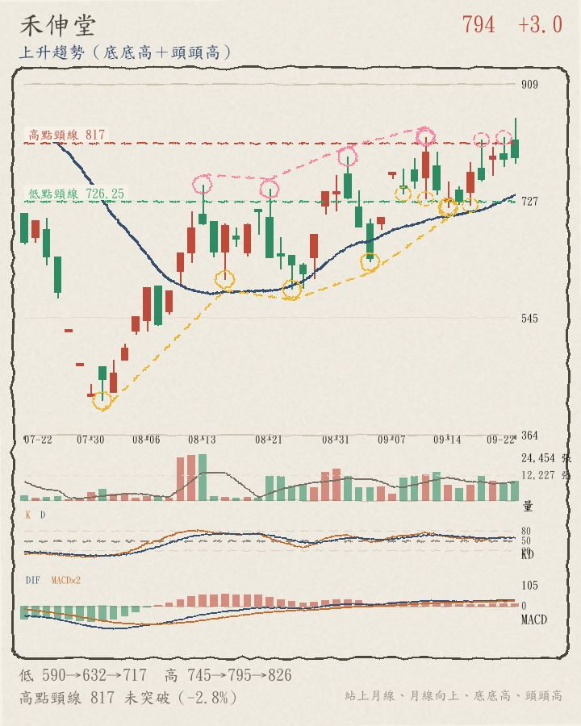
12:30 盤中 794（+0.38%），比加權指數弱 0.19 個百分點、站上月線 727.85，離高點頸線 817 還差 2.8%，轉折結構仍是底底高＋頭頭高。
- 月線位置：現價 794 在月線 727.85 之上（+9.1%）；5 日線 769.2 也在月線之上（短均在上）；月線向上
- 量能：以已過交易時間推估，今天成交量約是 20 日均量的 1.27 倍（量增），比 20 日均量大不少；上漲又量增，量價配合
- 關鍵價位：高點頸線 817 還沒突破，差 2.8%；前一交易日高點 825（低於 3.8%）；今天盤中高點 856（低於 7.2%）；今天盤中低點 785（高於 1.1%）
- 轉折結構：低點 590、632、717 一路墊高、高點 745、795、826 也一路墊高，是底底高＋頭頭高；還沒確認的轉折低點 09-14 717、09-16 720；還沒確認的轉折高點 09-17 822、09-21 825（圖上虛線小圈）
富喬 1815 上櫃
121 +0.0（+0.00%）
區間或轉弱 盤中成交值 73.75 億・全榜第 35 名（上櫃第 9 名）・相對大盤 -0.57
好條件 2/8：站上月線、月線向上
不好條件 2/8：相對大盤弱、貼近今日低點（1% 內）
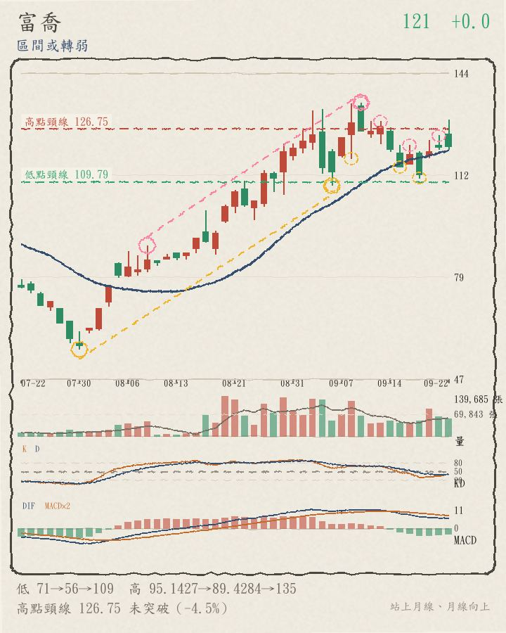
12:30 盤中 121（+0.00%），比加權指數弱 0.57 個百分點、站上月線 118.964，離高點頸線 126.75 還差 4.5%，轉折還沒走出明顯方向。
- 月線位置：現價 121 在月線 118.964 之上（+1.7%）；5 日線 117.1 也在月線之下（短均在下）；月線向上
- 量能：以已過交易時間推估，今天成交量約是 20 日均量的 1.02 倍（量平），跟 20 日均量差不多
- 關鍵價位：高點頸線 126.75 還沒突破，差 4.5%；前一交易日高點 124.5（低於 2.8%）；今天盤中高點 129.5（低於 6.6%）；今天盤中低點 120（高於 0.8%）
- 轉折結構：低點 70.857、56.2856、108.571 與高點 95.1427、89.4284、135 都沒有明顯遞增，屬於區間震盪或轉弱；還沒確認的轉折低點 09-15 114.5、09-17 111；還沒確認的轉折高點 09-16 121.5、09-21 124.5（圖上虛線小圈）
鴻海 2317 上市
253.5 +3.5（+1.40%）
區間或轉弱 盤中成交值 71.87 億・全榜第 36 名（上市第 27 名）・相對大盤 +0.83
好條件 5/8：站上月線、月線向上、相對大盤強、攻擊量（量增＋上漲）、守住今日高檔（距今日高點 1% 內）
不好條件 0/8：無
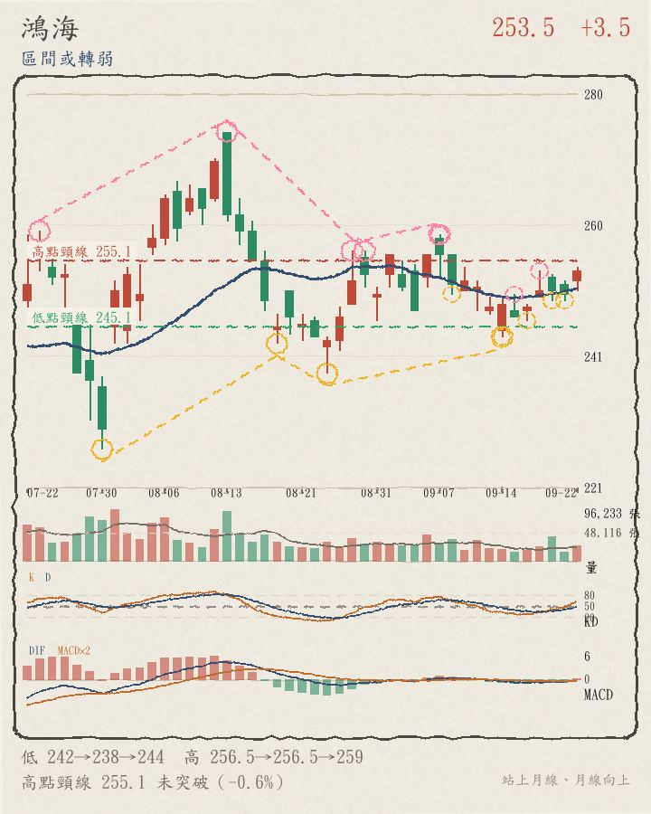
12:30 盤中 253.5（+1.40%），比加權指數強 0.83 個百分點、站上月線 250.375，離高點頸線 255.1 還差 0.6%，轉折還沒走出明顯方向。
- 月線位置：現價 253.5 在月線 250.375 之上（+1.2%）；5 日線 249.1 也在月線之下（短均在下）；月線向上
- 量能：以已過交易時間推估，今天成交量約是 20 日均量的 1.21 倍（量增），比 20 日均量大不少；上漲又量增，量價配合
- 關鍵價位：高點頸線 255.1 還沒突破，差 0.6%；前一交易日高點 252（高於 0.6%）；今天盤中高點 254（低於 0.2%）；今天盤中低點 250.5（高於 1.2%）
- 轉折結構：低點 242.5、238、243.5 與高點 256.5、256.5、259 都沒有明顯遞增，屬於區間震盪或轉弱；還沒確認的轉折低點 09-18 249、09-21 249；還沒確認的轉折高點 09-15 250、09-17 253.5（圖上虛線小圈）
雙鴻 3324 上櫃
1600 +80.0（+5.26%）
高點墊高、底部不穩 盤中成交值 69.22 億・全榜第 37 名（上櫃第 10 名）・相對大盤 +4.69
好條件 6/8：站上月線、月線向上、頭頭高、突破頸線、相對大盤強、攻擊量（量增＋上漲）
不好條件 0/8：無
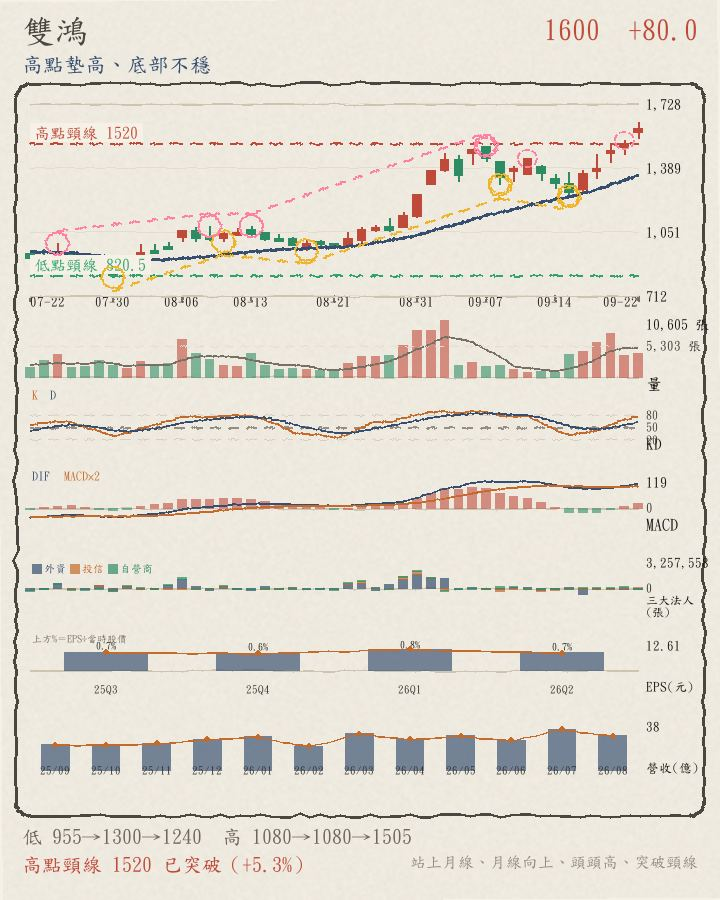
12:30 盤中 1600（+5.26%），比加權指數強 4.69 個百分點、站上月線 1325.5，已突破高點頸線 1520，高點還在墊高（但底部沒同步墊高）。
- 月線位置：現價 1600 在月線 1325.5 之上（+20.7%）；5 日線 1401 也在月線之上（短均在上）；月線向上
- 量能：以已過交易時間推估，今天成交量約是 20 日均量的 1.32 倍（量增），比 20 日均量大不少；上漲又量增，量價配合
- 關鍵價位：高點頸線 1520 已站上；前一交易日高點 1535（高於 4.2%）；今天盤中高點 1630（低於 1.8%）；今天盤中低點 1545（高於 3.6%）
- 轉折結構：高點 1080、1080、1505 墊高（頭頭高），但低點 955、1300、1240 沒有同步墊高；還沒確認的轉折低點 09-08 1300、09-15 1240；還沒確認的轉折高點 09-10 1440、09-21 1535（圖上虛線小圈）
金像電 2368 上市
1045 +0.0（+0.00%）
底部墊高、未過前高 盤中成交值 67.32 億・全榜第 38 名（上市第 28 名）・相對大盤 -0.57
好條件 1/8：底底高
不好條件 3/8：相對大盤弱、在月線之下、月線下彎
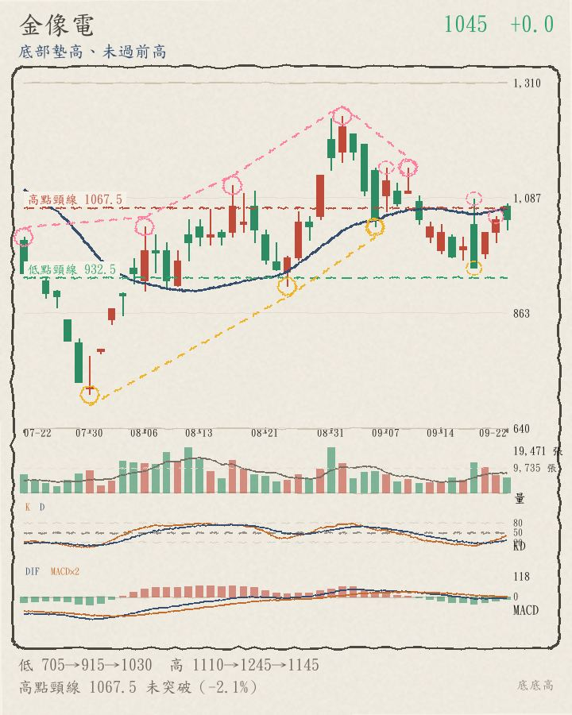
12:30 盤中 1045（+0.00%），比加權指數弱 0.57 個百分點、跌破月線 1062.5，離高點頸線 1067.5 還差 2.1%，底部還在墊高（但高點沒同步創高）。
- 月線位置：現價 1045 在月線 1062.5 之下（-1.6%）；5 日線 995.8 也在月線之下（短均在下）；月線向下
- 量能：以已過交易時間推估，今天成交量約是 20 日均量的 1.06 倍（量平），比 20 日均量大一些
- 關鍵價位：高點頸線 1067.5 還沒突破，差 2.1%；前一交易日高點 1050（低於 0.5%）；今天盤中高點 1075（低於 2.8%）；今天盤中低點 1025（高於 2.0%）
- 轉折結構：低點 705、915、1030 墊高（底底高），但高點 1110、1245、1145 沒有同步創高；還沒確認的轉折低點 09-04 1030、09-17 950；還沒確認的轉折高點 09-17 1085、09-21 1050（圖上虛線小圈）
鴻勁 7769 上市
6180 +180.0（+3.00%）
區間或轉弱 盤中成交值 61.12 億・全榜第 39 名（上市第 29 名）・相對大盤 +2.43
好條件 3/8：相對大盤強、攻擊量（量增＋上漲）、守住今日高檔（距今日高點 1% 內）
不好條件 2/8：在月線之下、月線下彎
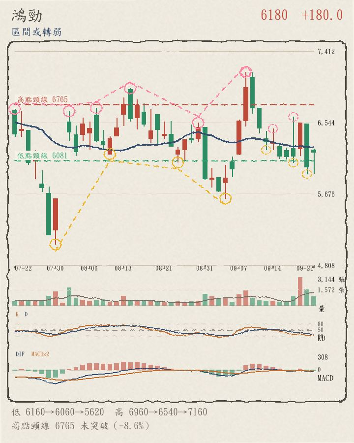
12:30 盤中 6180（+3.00%），比加權指數強 2.43 個百分點、跌破月線 6247.5，離高點頸線 6765 還差 8.6%，轉折還沒走出明顯方向。
- 月線位置：現價 6180 在月線 6247.5 之下（-1.1%）；5 日線 6187 也在月線之下（短均在下）；月線向下
- 量能：以已過交易時間推估，今天成交量約是 20 日均量的 1.57 倍（爆量），比 20 日均量大不少；上漲又量增，量價配合
- 關鍵價位：高點頸線 6765 還沒突破，差 8.6%；前一交易日高點 6530（低於 5.4%）；今天盤中高點 6225（低於 0.7%）；今天盤中低點 5925（高於 4.3%）
- 轉折結構：低點 6160、6060、5620 與高點 6960、6540、7160 都沒有明顯遞增，屬於區間震盪或轉弱；還沒確認的轉折低點 09-17 6055、09-21 5920；還沒確認的轉折高點 09-14 6470、09-17 6615（圖上虛線小圈）
台光電 2383 上市
4860 -35.0（-0.72%）
區間或轉弱 盤中成交值 61.09 億・全榜第 40 名（上市第 30 名）・相對大盤 -1.29
好條件 0/8：無
不好條件 5/8：跌破前低、今日下跌、相對大盤弱、在月線之下、月線下彎
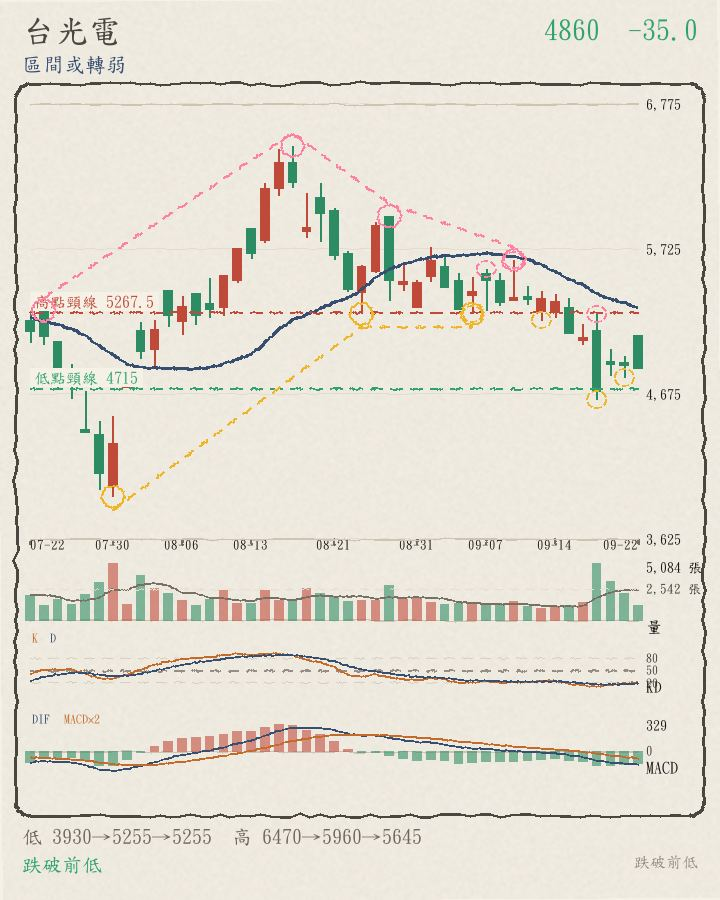
12:30 盤中 4860（-0.72%），比加權指數弱 1.29 個百分點、跌破月線 5336.5，離高點頸線 5267.5 還差 7.7%，轉折還沒走出明顯方向。
- 月線位置：現價 4860 在月線 5336.5 之下（-8.9%）；5 日線 4936 也在月線之下（短均在下）；月線向下
- 量能：以已過交易時間推估，今天成交量約是 20 日均量的 0.87 倍（量平），比 20 日均量少一些
- 關鍵價位：已跌破前一個轉折低點；高點頸線 5267.5 還在現價上方 7.7%；前一交易日高點 4945（低於 1.7%）；今天盤中高點 5100（低於 4.7%）；今天盤中低點 4860（高於 0.0%）
- 轉折結構：低點 3930、5255、5255 與高點 6470、5960、5645 都沒有明顯遞增，屬於區間震盪或轉弱；還沒確認的轉折低點 09-17 4635、09-21 4795；還沒確認的轉折高點 09-09 5645、09-17 5255（圖上虛線小圈）
穎崴 6515 上市
5755 -40.0（-0.69%）
高點墊高、底部不穩 盤中成交值 59.74 億・全榜第 41 名（上市第 31 名）・相對大盤 -1.26
好條件 1/8：頭頭高
不好條件 7/8：跌破前低、今日下跌、相對大盤弱、在月線之下、量增下跌（出貨）、跌破昨日低點、月線下彎
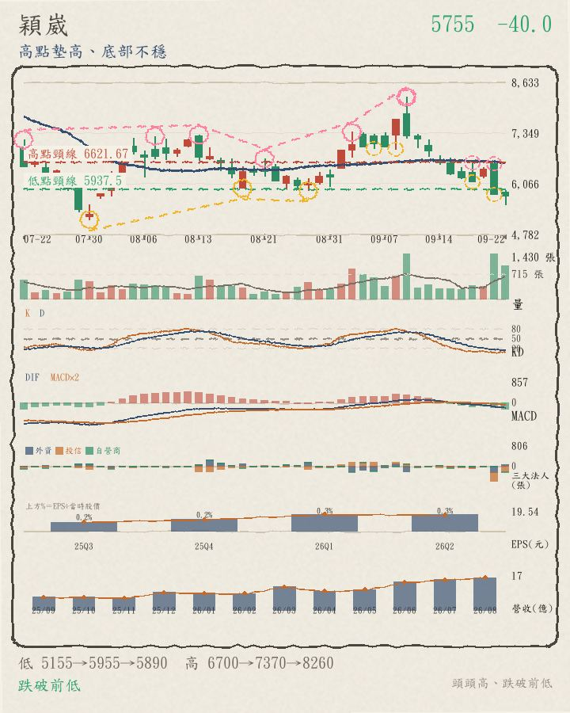
12:30 盤中 5755（-0.69%），比加權指數弱 1.26 個百分點、跌破月線 6624.5，離高點頸線 6621.67 還差 13.1%，高點還在墊高（但底部沒同步墊高）。
- 月線位置：現價 5755 在月線 6624.5 之下（-13.1%）；5 日線 6174 也在月線之下（短均在下）；月線向下
- 量能：以已過交易時間推估，今天成交量約是 20 日均量的 2.73 倍（爆量），比 20 日均量大不少；下跌卻量增，量價背離
- 關鍵價位：已跌破前一個轉折低點；高點頸線 6621.67 還在現價上方 13.1%；前一交易日高點 6570（低於 12.4%）；今天盤中高點 5895（低於 2.4%）；今天盤中低點 5530（高於 4.1%）
- 轉折結構：高點 6700、7370、8260 墊高（頭頭高），但低點 5155、5955、5890 沒有同步墊高；還沒確認的轉折低點 09-17 6110、09-21 5795；還沒確認的轉折高點 09-17 6595、09-21 6570（圖上虛線小圈）
華星光 4979 上櫃
616 -2.0（-0.32%）
區間或轉弱 盤中成交值 59.74 億・全榜第 42 名（上櫃第 11 名）・相對大盤 -0.89
好條件 2/8：站上月線、月線向上
不好條件 3/8：今日下跌、相對大盤弱、量增下跌（出貨）
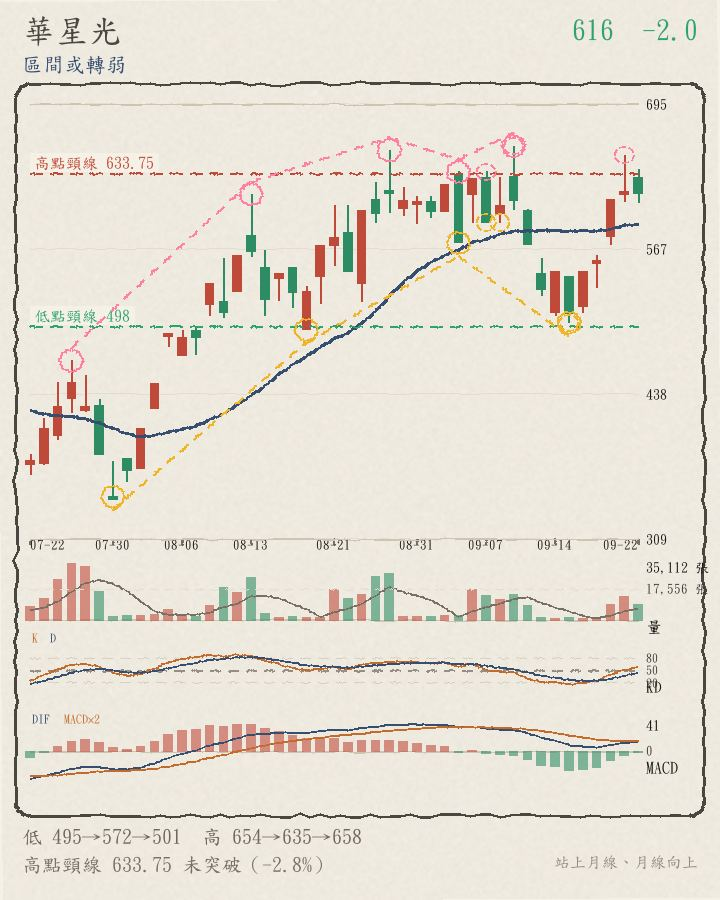
12:30 盤中 616（-0.32%），比加權指數弱 0.89 個百分點、站上月線 587.75，離高點頸線 633.75 還差 2.8%，轉折還沒走出明顯方向。
- 月線位置：現價 616 在月線 587.75 之上（+4.8%）；5 日線 568.2 也在月線之下（短均在下）；月線向上
- 量能：以已過交易時間推估，今天成交量約是 20 日均量的 1.36 倍（量增），比 20 日均量大不少；下跌卻量增，量價背離
- 關鍵價位：高點頸線 633.75 還沒突破，差 2.8%；前一交易日高點 650（低於 5.2%）；今天盤中高點 637（低於 3.3%）；今天盤中低點 608（高於 1.3%）
- 轉折結構：低點 495、572、501 與高點 654、635、658 都沒有明顯遞增，屬於區間震盪或轉弱；還沒確認的轉折低點 09-08 590、09-15 501；還沒確認的轉折高點 09-09 658、09-21 650（圖上虛線小圈）
致茂 2360 上市
2475 +100.0（+4.21%）
上升趨勢（底底高＋頭頭高） 盤中成交值 57.87 億・全榜第 43 名（上市第 32 名）・相對大盤 +3.64
好條件 7/8：站上月線、月線向上、底底高、頭頭高、突破頸線、相對大盤強、攻擊量（量增＋上漲）
不好條件 0/8：無
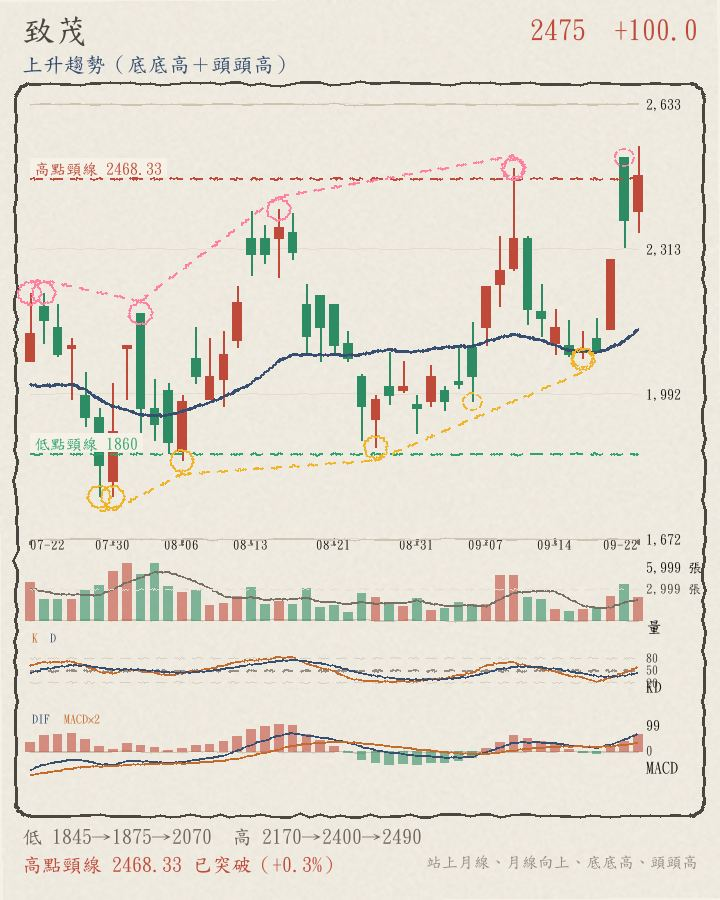
12:30 盤中 2475（+4.21%），比加權指數強 3.64 個百分點、站上月線 2109.25，已突破高點頸線 2468.33，轉折結構仍是底底高＋頭頭高。
- 月線位置：現價 2475 在月線 2109.25 之上（+17.3%）；5 日線 2184 也在月線之上（短均在上）；月線向上
- 量能：以已過交易時間推估，今天成交量約是 20 日均量的 1.52 倍（爆量），比 20 日均量大不少；上漲又量增，量價配合
- 關鍵價位：高點頸線 2468.33 已站上；前一交易日高點 2515（低於 1.6%）；今天盤中高點 2540（低於 2.6%）；今天盤中低點 2350（高於 5.3%）
- 轉折結構：低點 1845、1875、2070 一路墊高、高點 2170、2400、2490 也一路墊高，是底底高＋頭頭高；還沒確認的轉折低點 09-04 1975、09-16 2070；還沒確認的轉折高點 09-09 2490、09-21 2515（圖上虛線小圈）
信驊 5274 上櫃
21300 +1480.0（+7.47%）
高點墊高、底部不穩 盤中成交值 56.87 億・全榜第 44 名（上櫃第 12 名）・相對大盤 +6.90
好條件 6/8：站上月線、月線向上、頭頭高、突破頸線、相對大盤強、攻擊量（量增＋上漲）
不好條件 0/8：無
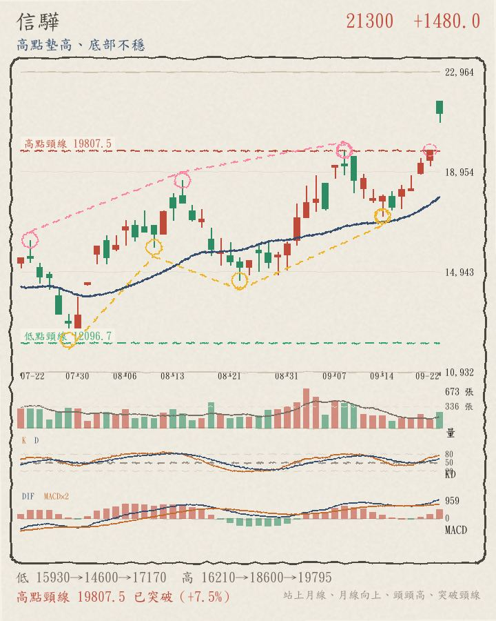
12:30 盤中 21300（+7.47%），比加權指數強 6.90 個百分點、站上月線 17650.8，已突破高點頸線 19807.5，高點還在墊高（但底部沒同步墊高）。
- 月線位置：現價 21300 在月線 17650.8 之上（+20.7%）；5 日線 18631 也在月線之上（短均在上）；月線向上
- 量能：以已過交易時間推估，今天成交量約是 20 日均量的 1.14 倍（量增），比 20 日均量大一些；上漲又量增，量價配合
- 關鍵價位：高點頸線 19807.5 已站上；前一交易日高點 19820（高於 7.5%）；今天盤中高點 21800（低於 2.3%）；今天盤中低點 20945（高於 1.7%）
- 轉折結構：高點 16210、18600、19795 墊高（頭頭高），但低點 15930、14600、17170 沒有同步墊高；還沒確認的轉折低點 09-14 17170；還沒確認的轉折高點 09-08 19795、09-21 19820（圖上虛線小圈）
奇鋐 3017 上市
3430 +15.0（+0.44%）
高點墊高、底部不穩 盤中成交值 56.22 億・全榜第 45 名（上市第 33 名）・相對大盤 -0.13
好條件 3/8：站上月線、月線向上、頭頭高
不好條件 2/8：相對大盤弱、貼近今日低點（1% 內）
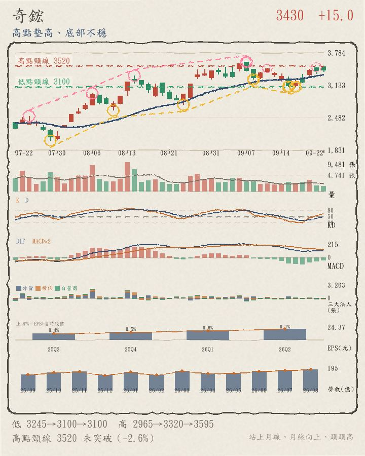
12:30 盤中 3430（+0.44%），比加權指數弱 0.13 個百分點、站上月線 3318.25，離高點頸線 3520 還差 2.6%，高點還在墊高（但底部沒同步墊高）。
- 月線位置：現價 3430 在月線 3318.25 之上（+3.4%）；5 日線 3264 也在月線之下（短均在下）；月線向上
- 量能：以已過交易時間推估，今天成交量約是 20 日均量的 0.65 倍（量縮），比 20 日均量少很多；上漲但量縮，量價背離
- 關鍵價位：高點頸線 3520 還沒突破，差 2.6%；前一交易日高點 3495（低於 1.9%）；今天盤中高點 3505（低於 2.1%）；今天盤中低點 3400（高於 0.9%）
- 轉折結構：高點 2965、3320、3595 墊高（頭頭高），但低點 3245、3100、3100 沒有同步墊高；還沒確認的轉折低點 09-15 3100、09-16 3100；還沒確認的轉折高點 09-10 3470、09-21 3495（圖上虛線小圈）
中美晶 5483 上櫃
197.5 +11.0（+5.90%）
高點墊高、底部不穩 盤中成交值 56.16 億・全榜第 46 名（上櫃第 13 名）・相對大盤 +5.33
好條件 6/8：站上月線、月線向上、頭頭高、突破頸線、相對大盤強、攻擊量（量增＋上漲）
不好條件 0/8：無
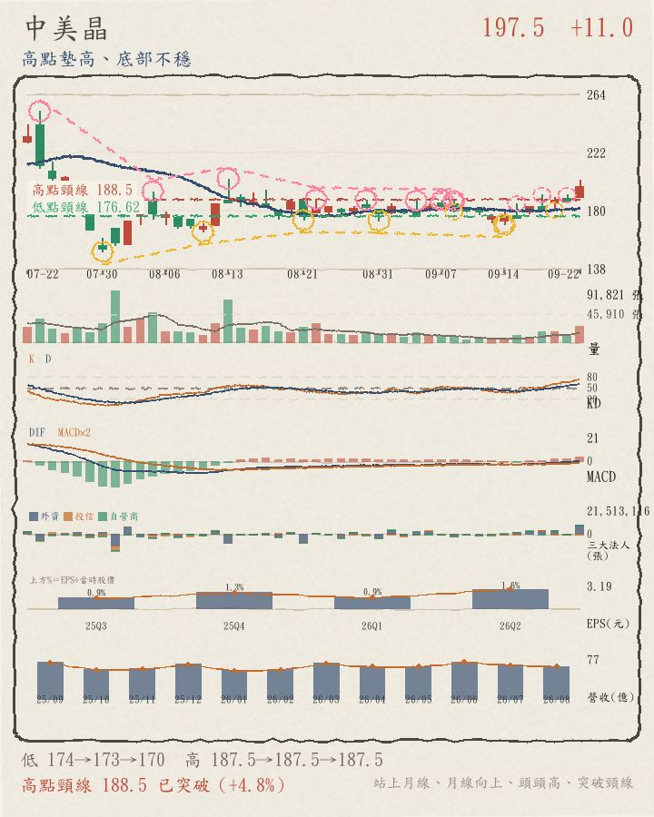
12:30 盤中 197.5（+5.90%），比加權指數強 5.33 個百分點、站上月線 181，已突破高點頸線 188.5，高點還在墊高（但底部沒同步墊高）。
- 月線位置：現價 197.5 在月線 181 之上（+9.1%）；5 日線 183.1 也在月線之上（短均在上）；月線向上
- 量能：以已過交易時間推估，今天成交量約是 20 日均量的 2.78 倍（爆量），比 20 日均量大不少；上漲又量增，量價配合
- 關鍵價位：高點頸線 188.5 已站上；前一交易日高點 191.5（高於 3.1%）；今天盤中高點 202（低於 2.2%）；今天盤中低點 190（高於 3.9%）
- 轉折結構：高點 187.5、187.5、187.5 墊高（頭頭高），但低點 173.5、173、170 沒有同步墊高；還沒確認的轉折低點 09-14 170、09-18 180.5；還沒確認的轉折高點 09-17 191.5、09-21 191.5（圖上虛線小圈）
華新科 2492 上市
314.5 +6.0（+1.94%）
底部墊高、未過前高 盤中成交值 56.06 億・全榜第 47 名（上市第 34 名）・相對大盤 +1.37
好條件 4/8：站上月線、月線向上、底底高、相對大盤強
不好條件 0/8：無
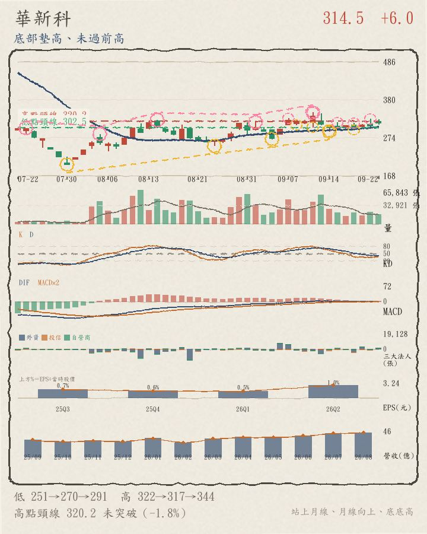
12:30 盤中 314.5（+1.94%），比加權指數強 1.37 個百分點、站上月線 301.55，離高點頸線 320.2 還差 1.8%，底部還在墊高（但高點沒同步創高）。
- 月線位置：現價 314.5 在月線 301.55 之上（+4.3%）；5 日線 304.5 也在月線之上（短均在上）；月線向上
- 量能：以已過交易時間推估，今天成交量約是 20 日均量的 0.80 倍（量平），比 20 日均量少很多；上漲但量縮，量價背離
- 關鍵價位：高點頸線 320.2 還沒突破，差 1.8%；前一交易日高點 326（低於 3.5%）；今天盤中高點 324（低於 2.9%）；今天盤中低點 310.5（高於 1.3%）
- 轉折結構：低點 251、270、291 墊高（底底高），但高點 322、317、344 沒有同步創高；還沒確認的轉折低點 09-14 291、09-17 295；還沒確認的轉折高點 09-17 314.5、09-21 326（圖上虛線小圈）
力積電 6770 上市
72.5 -0.2（-0.28%）
高點墊高、底部不穩 盤中成交值 54.74 億・全榜第 48 名（上市第 35 名）・相對大盤 -0.85
好條件 3/8：站上月線、月線向上、頭頭高
不好條件 3/8：今日下跌、相對大盤弱、貼近今日低點（1% 內）
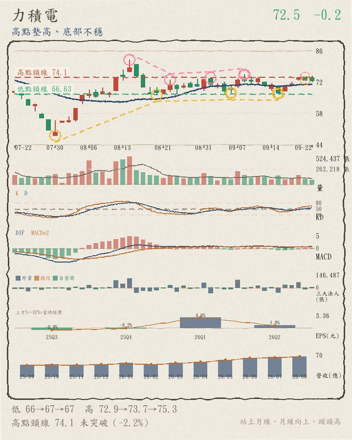
12:30 盤中 72.5（-0.28%），比加權指數弱 0.85 個百分點、站上月線 70.83，離高點頸線 74.1 還差 2.2%，高點還在墊高（但底部沒同步墊高）。
- 月線位置：現價 72.5 在月線 70.83 之上（+2.4%）；5 日線 70.94 也在月線之上（短均在上）；月線向上
- 量能：以已過交易時間推估，今天成交量約是 20 日均量的 0.71 倍（量平），比 20 日均量少很多
- 關鍵價位：高點頸線 74.1 還沒突破，差 2.2%；前一交易日高點 74.5（低於 2.7%）；今天盤中高點 74.7（低於 2.9%）；今天盤中低點 72.1（高於 0.6%）
- 轉折結構：高點 72.9、73.7、75.3 墊高（頭頭高），但低點 66.2、67、66.7 沒有同步墊高；還沒確認的轉折低點 09-15 66.7、09-21 72.5；還沒確認的轉折高點 09-08 75.3、09-21 74.5（圖上虛線小圈）
智邦 2345 上市
1915 +75.0（+4.08%）
區間或轉弱 盤中成交值 53.14 億・全榜第 49 名（上市第 36 名）・相對大盤 +3.51
好條件 4/8：突破頸線、相對大盤強、攻擊量（量增＋上漲）、守住今日高檔（距今日高點 1% 內）
不好條件 3/8：跌破前低、在月線之下、月線下彎
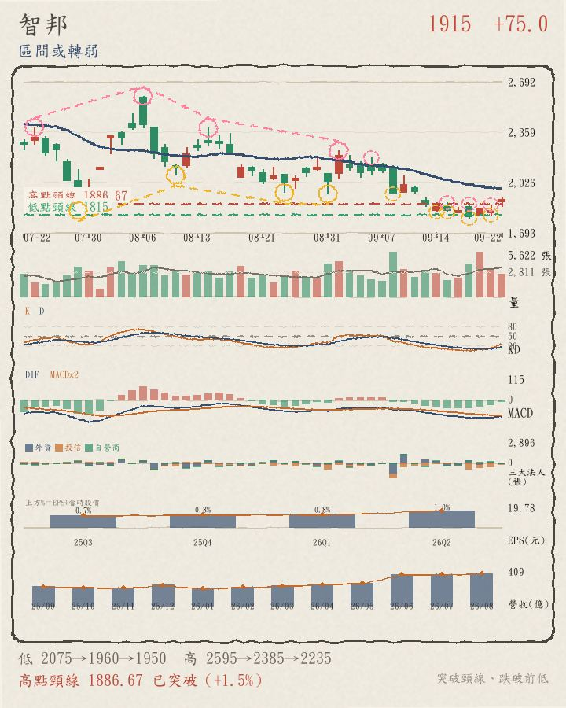
12:30 盤中 1915（+4.08%），比加權指數強 3.51 個百分點、跌破月線 1992，已突破高點頸線 1886.67，轉折還沒走出明顯方向。
- 月線位置：現價 1915 在月線 1992 之下（-3.9%）；5 日線 1835 也在月線之下（短均在下）；月線向下
- 量能：以已過交易時間推估，今天成交量約是 20 日均量的 1.14 倍（量增），比 20 日均量大一些；上漲又量增，量價配合
- 關鍵價位：高點頸線 1886.67 已站上；前一交易日高點 1880（高於 1.9%）；今天盤中高點 1925（低於 0.5%）；今天盤中低點 1865（高於 2.7%）
- 轉折結構：低點 2075、1960、1950 與高點 2595、2385、2235 都沒有明顯遞增，屬於區間震盪或轉弱；還沒確認的轉折低點 09-17 1790、09-21 1810；還沒確認的轉折高點 09-17 1885、09-21 1880（圖上虛線小圈）
欣銓 3264 上櫃
278.5 -5.5（-1.94%）
高點墊高、底部不穩 盤中成交值 51.63 億・全榜第 50 名（上櫃第 14 名）・相對大盤 -2.51
好條件 4/8：站上月線、月線向上、頭頭高、突破頸線
不好條件 3/8：今日下跌、相對大盤弱、量增下跌（出貨）
12:30 盤中 278.5（-1.94%），比加權指數弱 2.51 個百分點、站上月線 233.05，已突破高點頸線 239.83，高點還在墊高（但底部沒同步墊高）。
- 月線位置：現價 278.5 在月線 233.05 之上（+19.5%）；5 日線 248.2 也在月線之上（短均在上）；月線向上
- 量能：以已過交易時間推估，今天成交量約是 20 日均量的 2.83 倍（爆量），比 20 日均量大不少；下跌卻量增，量價背離
- 關鍵價位：高點頸線 239.83 已站上；前一交易日高點 284（低於 1.9%）；今天盤中高點 289.5（低於 3.8%）；今天盤中低點 274.5（高於 1.5%）
- 轉折結構：高點 238、239.5、251.5 墊高（頭頭高），但低點 202、222.5、220 沒有同步墊高；還沒確認的轉折低點 09-08 222.5、09-16 220；還沒確認的轉折高點 09-10 251.5、09-21 284（圖上虛線小圈）
世界 5347 上櫃
174 +2.0（+1.16%）
高點墊高、底部不穩 盤中成交值 50.27 億・全榜第 51 名（上櫃第 15 名）・相對大盤 +0.59
好條件 5/8：站上月線、月線向上、頭頭高、相對大盤強、攻擊量（量增＋上漲）
不好條件 0/8：無
12:30 盤中 174（+1.16%），比加權指數強 0.59 個百分點、站上月線 156.1，離高點頸線 174 還差 0.0%，高點還在墊高（但底部沒同步墊高）。
- 月線位置：現價 174 在月線 156.1 之上（+11.5%）；5 日線 164.1 也在月線之上（短均在上）；月線向上
- 量能：以已過交易時間推估，今天成交量約是 20 日均量的 2.80 倍（爆量），比 20 日均量大不少；上漲又量增，量價配合
- 關鍵價位：高點頸線 174 還沒突破，差 0.0%；前一交易日高點 174（高於 0.0%）；今天盤中高點 181.5（低於 4.1%）；今天盤中低點 172（高於 1.2%）
- 轉折結構：高點 157、158、163 墊高（頭頭高），但低點 146.5、147、152.5 沒有同步墊高；還沒確認的轉折低點 09-16 153、09-21 166.5；還沒確認的轉折高點 09-18 174、09-21 174（圖上虛線小圈）
宏致 3605 上市
166.5 -2.5（-1.48%）
上升趨勢（底底高＋頭頭高） 盤中成交值 49.06 億・全榜第 52 名（上市第 37 名）・相對大盤 -2.05
好條件 5/8：站上月線、月線向上、底底高、頭頭高、突破頸線
不好條件 4/8：今日下跌、相對大盤弱、量增下跌（出貨）、貼近今日低點（1% 內）
12:30 盤中 166.5（-1.48%），比加權指數弱 2.05 個百分點、站上月線 129.225，已突破高點頸線 137.67，轉折結構仍是底底高＋頭頭高。
- 月線位置：現價 166.5 在月線 129.225 之上（+28.9%）；5 日線 146.1 也在月線之上（短均在上）；月線向上
- 量能：以已過交易時間推估，今天成交量約是 20 日均量的 2.20 倍（爆量），比 20 日均量大不少；下跌卻量增，量價背離
- 關鍵價位：高點頸線 137.67 已站上；前一交易日高點 169（低於 1.5%）；今天盤中高點 177（低於 5.9%）；今天盤中低點 165（高於 0.9%）
- 轉折結構：低點 106.5、113.5、118 一路墊高、高點 137.5、141、134.5 也一路墊高，是底底高＋頭頭高；還沒確認的轉折低點 09-04 113.5、09-14 118；還沒確認的轉折高點 09-09 134.5、09-21 169（圖上虛線小圈）
尖點 8021 上市
475 +9.0（+1.93%）
高點墊高、底部不穩 盤中成交值 49.05 億・全榜第 53 名（上市第 38 名）・相對大盤 +1.36
好條件 5/8：站上月線、月線向上、頭頭高、相對大盤強、攻擊量（量增＋上漲）
不好條件 0/8：無
12:30 盤中 475（+1.93%），比加權指數強 1.36 個百分點、站上月線 438.875，離高點頸線 481 還差 1.2%，高點還在墊高（但底部沒同步墊高）。
- 月線位置：現價 475 在月線 438.875 之上（+8.2%）；5 日線 449.5 也在月線之上（短均在上）；月線向上
- 量能：以已過交易時間推估，今天成交量約是 20 日均量的 1.91 倍（爆量），比 20 日均量大不少；上漲又量增，量價配合
- 關鍵價位：高點頸線 481 還沒突破，差 1.2%；前一交易日高點 481（低於 1.2%）；今天盤中高點 480（低於 1.0%）；今天盤中低點 460（高於 3.3%）
- 轉折結構：高點 452、465、462 墊高（頭頭高），但低點 373.5、413、410.5 沒有同步墊高；還沒確認的轉折低點 09-16 411.5、09-18 444；還沒確認的轉折高點 09-17 481、09-21 481（圖上虛線小圈）
聯亞 3081 上櫃
2860 -15.0（-0.52%）
底部墊高、未過前高 盤中成交值 47.82 億・全榜第 54 名（上櫃第 16 名）・相對大盤 -1.09
好條件 1/8：底底高
不好條件 5/8：今日下跌、相對大盤弱、在月線之下、貼近今日低點（1% 內）、月線下彎
12:30 盤中 2860（-0.52%），比加權指數弱 1.09 個百分點、跌破月線 3032.75，離高點頸線 2896.67 還差 1.3%，底部還在墊高（但高點沒同步創高）。
- 月線位置：現價 2860 在月線 3032.75 之下（-5.7%）；5 日線 2791 也在月線之下（短均在下）；月線向下
- 量能：以已過交易時間推估，今天成交量約是 20 日均量的 0.55 倍（量縮），比 20 日均量少很多
- 關鍵價位：高點頸線 2896.67 還沒突破，差 1.3%；前一交易日高點 2910（低於 1.7%）；今天盤中高點 2950（低於 3.1%）；今天盤中低點 2835（高於 0.9%）
- 轉折結構：低點 1335、1450、2650 墊高（底底高），但高點 3065、3600、2930 沒有同步創高；還沒確認的轉折低點 09-04 2980、09-15 2650；還沒確認的轉折高點 09-16 2930、09-17 2930（圖上虛線小圈）
力成 6239 上市
293.5 +1.0（+0.34%）
高點墊高、底部不穩 盤中成交值 47.12 億・全榜第 55 名（上市第 39 名）・相對大盤 -0.23
好條件 4/8：站上月線、月線向上、頭頭高、攻擊量（量增＋上漲）
不好條件 2/8：相對大盤弱、貼近今日低點（1% 內）
12:30 盤中 293.5（+0.34%），比加權指數弱 0.23 個百分點、站上月線 278.6，離高點頸線 294.2 還差 0.2%，高點還在墊高（但底部沒同步墊高）。
- 月線位置：現價 293.5 在月線 278.6 之上（+5.3%）；5 日線 278.7 也在月線之上（短均在上）；月線向上
- 量能：以已過交易時間推估，今天成交量約是 20 日均量的 1.60 倍（爆量），比 20 日均量大不少；上漲又量增，量價配合
- 關鍵價位：高點頸線 294.2 還沒突破，差 0.2%；前一交易日高點 296.5（低於 1.0%）；今天盤中高點 302（低於 2.8%）；今天盤中低點 291（高於 0.9%）
- 轉折結構：高點 296、298、290.5 墊高（頭頭高），但低點 271、272.5、262 沒有同步墊高；還沒確認的轉折低點 09-14 262、09-16 268；還沒確認的轉折高點 09-15 279.5、09-21 296.5（圖上虛線小圈）
光寶科 2301 上市
286 -2.5（-0.87%）
高點墊高、底部不穩 盤中成交值 46.1 億・全榜第 56 名（上市第 40 名）・相對大盤 -1.44
好條件 2/8：月線向上、頭頭高
不好條件 4/8：今日下跌、相對大盤弱、在月線之下、貼近今日低點（1% 內）
12:30 盤中 286（-0.87%），比加權指數弱 1.44 個百分點、跌破月線 293.825，離高點頸線 288.83 還差 1.0%，高點還在墊高（但底部沒同步墊高）。
- 月線位置：現價 286 在月線 293.825 之下（-2.7%）；5 日線 279.9 也在月線之下（短均在下）；月線向上
- 量能：以已過交易時間推估，今天成交量約是 20 日均量的 0.73 倍（量平），比 20 日均量少很多
- 關鍵價位：高點頸線 288.83 還沒突破，差 1.0%；前一交易日高點 294（低於 2.7%）；今天盤中高點 299.5（低於 4.5%）；今天盤中低點 284.5（高於 0.5%）
- 轉折結構：高點 229、286.5、328 墊高（頭頭高），但低點 251、296.5、271 沒有同步墊高；還沒確認的轉折低點 09-14 272、09-16 271；還沒確認的轉折高點 09-15 286、09-21 294（圖上虛線小圈）
精測 6510 上櫃
3740 +255.0（+7.32%）
高點墊高、底部不穩 盤中成交值 45.63 億・全榜第 57 名（上櫃第 17 名）・相對大盤 +6.75
好條件 6/8：站上月線、月線向上、頭頭高、相對大盤強、攻擊量（量增＋上漲）、守住今日高檔（距今日高點 1% 內）
不好條件 0/8：無
12:30 盤中 3740（+7.32%），比加權指數強 6.75 個百分點、站上月線 3237，高點還在墊高（但底部沒同步墊高）。
- 月線位置：現價 3740 在月線 3237 之上（+15.5%）；5 日線 3338 也在月線之上（短均在上）；月線向上
- 量能：以已過交易時間推估，今天成交量約是 20 日均量的 1.73 倍（爆量），比 20 日均量大不少；上漲又量增，量價配合
- 關鍵價位：前一交易日高點 3680（高於 1.6%）；今天盤中高點 3760（低於 0.5%）；今天盤中低點 3460（高於 8.1%）
- 轉折結構：高點 2975、3100、3935 墊高（頭頭高），但低點 2400、2235、2570 沒有同步墊高；還沒確認的轉折低點 09-17 3165；還沒確認的轉折高點 09-09 3935、09-21 3680（圖上虛線小圈）
力旺 3529 上櫃
3110 +280.0（+9.89%）
上升趨勢（底底高＋頭頭高） 盤中成交值 45.62 億・全榜第 58 名（上櫃第 18 名）・相對大盤 +9.32
好條件 7/8：站上月線、月線向上、底底高、頭頭高、突破頸線、相對大盤強、攻擊量（量增＋上漲）
不好條件 0/8：無
12:30 盤中 3110（+9.89%），比加權指數強 9.32 個百分點、站上月線 2593.5，已突破高點頸線 2972.5，轉折結構仍是底底高＋頭頭高。
- 月線位置：現價 3110 在月線 2593.5 之上（+19.9%）；5 日線 2742 也在月線之上（短均在上）；月線向上
- 量能：以已過交易時間推估，今天成交量約是 20 日均量的 1.26 倍（量增），比 20 日均量大不少；上漲又量增，量價配合
- 關鍵價位：高點頸線 2972.5 已站上；前一交易日高點 2950（高於 5.4%）；今天盤中高點 3110（高於 0.0%）；今天盤中低點 2890（高於 7.6%）
- 轉折結構：低點 1995、2090、2530 一路墊高、高點 2825、2720、2875 也一路墊高，是底底高＋頭頭高；還沒確認的轉折低點 09-14 2530；還沒確認的轉折高點 09-14 2770、09-21 2950（圖上虛線小圈）
玉晶光 3406 上市
929 -23.0（-2.42%）
高點墊高、底部不穩 盤中成交值 45.06 億・全榜第 59 名（上市第 41 名）・相對大盤 -2.99
好條件 2/8：月線向上、頭頭高
不好條件 4/8：今日下跌、相對大盤弱、在月線之下、貼近今日低點（1% 內）
12:30 盤中 929（-2.42%），比加權指數弱 2.99 個百分點、跌破月線 965.3，離高點頸線 1068.33 還差 13.0%，高點還在墊高（但底部沒同步墊高）。
- 月線位置：現價 929 在月線 965.3 之下（-3.8%）；5 日線 961.8 也在月線之下（短均在下）；月線向上
- 量能：以已過交易時間推估，今天成交量約是 20 日均量的 0.92 倍（量平），比 20 日均量少一些
- 關鍵價位：高點頸線 1068.33 還沒突破，差 13.0%；前一交易日高點 1005（低於 7.6%）；今天盤中高點 973（低於 4.5%）；今天盤中低點 920（高於 1.0%）
- 轉折結構：高點 584、1090、1140 墊高（頭頭高），但低點 628、961、906 沒有同步墊高；還沒確認的轉折低點 09-15 906、09-21 925；還沒確認的轉折高點 09-17 1045、09-21 1005（圖上虛線小圈）
創意 3443 上市
8375 +760.0（+9.98%）
上升趨勢（底底高＋頭頭高） 盤中成交值 43.97 億・全榜第 60 名（上市第 42 名）・相對大盤 +9.41
好條件 6/8：站上月線、月線向上、底底高、頭頭高、突破頸線、相對大盤強
不好條件 1/8：貼近今日低點（1% 內）
12:30 盤中 8375（+9.98%），比加權指數強 9.41 個百分點、站上月線 6163.25，已突破高點頸線 6532.5，轉折結構仍是底底高＋頭頭高。
- 月線位置：現價 8375 在月線 6163.25 之上（+35.9%）；5 日線 6694 也在月線之上（短均在上）；月線向上
- 量能：以已過交易時間推估，今天成交量約是 20 日均量的 0.37 倍（量縮），比 20 日均量少很多；上漲但量縮，量價背離
- 關鍵價位：高點頸線 6532.5 已站上；前一交易日高點 7755（高於 8.0%）；今天盤中高點 8375（高於 0.0%）；今天盤中低點 8370（高於 0.1%）
- 轉折結構：低點 5205、5680、5850 一路墊高、高點 4475、5990、6490 也一路墊高，是底底高＋頭頭高；還沒確認的轉折低點 09-10 5850、09-14 5850；還沒確認的轉折高點 09-14 6575、09-21 7755（圖上虛線小圈）
強茂 2481 上市
171.5 +3.5（+2.08%）
高點墊高、底部不穩 盤中成交值 43.52 億・全榜第 61 名（上市第 43 名）・相對大盤 +1.51
好條件 4/8：站上月線、月線向上、頭頭高、相對大盤強
不好條件 1/8：貼近今日低點（1% 內）
12:30 盤中 171.5（+2.08%），比加權指數強 1.51 個百分點、站上月線 155.175，離高點頸線 171.83 還差 0.2%，高點還在墊高（但底部沒同步墊高）。
- 月線位置：現價 171.5 在月線 155.175 之上（+10.5%）；5 日線 164.3 也在月線之上（短均在上）；月線向上
- 量能：以已過交易時間推估，今天成交量約是 20 日均量的 0.80 倍（量平），比 20 日均量少很多；上漲但量縮，量價背離
- 關鍵價位：高點頸線 171.83 還沒突破，差 0.2%；前一交易日高點 173.5（低於 1.2%）；今天盤中高點 175（低於 2.0%）；今天盤中低點 170（高於 0.9%）
- 轉折結構：高點 152.5、161、168 墊高（頭頭高），但低點 129.5、146、146 沒有同步墊高；還沒確認的轉折低點 09-09 150、09-14 146；還沒確認的轉折高點 09-17 174、09-21 173.5（圖上虛線小圈）
矽格 6257 上市
251.5 +1.0（+0.40%）
高點墊高、底部不穩 盤中成交值 42.42 億・全榜第 62 名（上市第 44 名）・相對大盤 -0.17
好條件 5/8：站上月線、月線向上、頭頭高、突破頸線、攻擊量（量增＋上漲）
不好條件 2/8：相對大盤弱、貼近今日低點（1% 內）
12:30 盤中 251.5（+0.40%），比加權指數弱 0.17 個百分點、站上月線 215.05，已突破高點頸線 223.88，高點還在墊高（但底部沒同步墊高）。
- 月線位置：現價 251.5 在月線 215.05 之上（+16.9%）；5 日線 227 也在月線之上（短均在上）；月線向上
- 量能：以已過交易時間推估，今天成交量約是 20 日均量的 2.31 倍（爆量），比 20 日均量大不少；上漲又量增，量價配合
- 關鍵價位：高點頸線 223.88 已站上；前一交易日高點 258.5（低於 2.7%）；今天盤中高點 263（低於 4.4%）；今天盤中低點 249（高於 1.0%）
- 轉折結構：高點 224、228、225 墊高（頭頭高），但低點 190、207.5、204 沒有同步墊高；還沒確認的轉折低點 09-08 208、09-14 204；還沒確認的轉折高點 09-15 214.5、09-21 258.5（圖上虛線小圈）
健策 3653 上市
5870 +80.0（+1.38%）
區間或轉弱 盤中成交值 41.56 億・全榜第 63 名（上市第 45 名）・相對大盤 +0.81
好條件 3/8：站上月線、月線向上、相對大盤強
不好條件 0/8：無
12:30 盤中 5870（+1.38%），比加權指數強 0.81 個百分點、站上月線 5652.75，離高點頸線 5958 還差 1.5%，轉折還沒走出明顯方向。
- 月線位置：現價 5870 在月線 5652.75 之上（+3.8%）；5 日線 5444 也在月線之下（短均在下）；月線向上
- 量能：以已過交易時間推估，今天成交量約是 20 日均量的 0.76 倍（量平），比 20 日均量少很多；上漲但量縮，量價背離
- 關鍵價位：高點頸線 5958 還沒突破，差 1.5%；前一交易日高點 5890（低於 0.3%）；今天盤中高點 6050（低於 3.0%）；今天盤中低點 5780（高於 1.6%）
- 轉折結構：低點 4910、5480、5210 與高點 6095、6000、5920 都沒有明顯遞增，屬於區間震盪或轉弱；還沒確認的轉折低點 09-08 5480、09-16 5210；還沒確認的轉折高點 09-14 5920、09-21 5890（圖上虛線小圈）
嘉晶 3016 上市
132.5 +12.0（+9.96%）
上升趨勢（底底高＋頭頭高） 盤中成交值 38.81 億・全榜第 64 名（上市第 46 名）・相對大盤 +9.39
好條件 7/8：站上月線、月線向上、底底高、頭頭高、突破頸線、相對大盤強、攻擊量（量增＋上漲）
不好條件 0/8：無
12:30 盤中 132.5（+9.96%），比加權指數強 9.39 個百分點、站上月線 105.816，已突破高點頸線 121.33，轉折結構仍是底底高＋頭頭高。
- 月線位置：現價 132.5 在月線 105.816 之上（+25.2%）；5 日線 115.6 也在月線之上（短均在上）；月線向上
- 量能：以已過交易時間推估，今天成交量約是 20 日均量的 3.76 倍（爆量），比 20 日均量大不少；上漲又量增，量價配合
- 關鍵價位：高點頸線 121.33 已站上；前一交易日高點 123（高於 7.7%）；今天盤中高點 132.5（高於 0.0%）；今天盤中低點 124.5（高於 6.4%）
- 轉折結構：低點 93.7634、97.5、99.3 一路墊高、高點 111、105.846、108 也一路墊高，是底底高＋頭頭高；還沒確認的轉折低點 09-10 99.3、09-16 107.5；還沒確認的轉折高點 09-17 122、09-21 123（圖上虛線小圈）
富世達 6805 上市
2520 +105.0（+4.35%）
高點墊高、底部不穩 盤中成交值 38.46 億・全榜第 65 名（上市第 47 名）・相對大盤 +3.78
好條件 6/8：站上月線、月線向上、頭頭高、突破頸線、相對大盤強、攻擊量（量增＋上漲）
不好條件 0/8：無
12:30 盤中 2520（+4.35%），比加權指數強 3.78 個百分點、站上月線 2176.25，已突破高點頸線 2440，高點還在墊高（但底部沒同步墊高）。
- 月線位置：現價 2520 在月線 2176.25 之上（+15.8%）；5 日線 2174 也在月線之下（短均在下）；月線向上
- 量能：以已過交易時間推估，今天成交量約是 20 日均量的 1.28 倍（量增），比 20 日均量大不少；上漲又量增，量價配合
- 關鍵價位：高點頸線 2440 已站上；前一交易日高點 2445（高於 3.1%）；今天盤中高點 2565（低於 1.8%）；今天盤中低點 2470（高於 2.0%）
- 轉折結構：高點 1995、2435、2325 墊高（頭頭高），但低點 2030、2010、2010 沒有同步墊高；還沒確認的轉折低點 09-15 2010、09-16 2010；還沒確認的轉折高點 09-09 2325、09-21 2445（圖上虛線小圈）
川湖 2059 上市
12840 +40.0（+0.31%）
區間或轉弱 盤中成交值 37.49 億・全榜第 66 名（上市第 48 名）・相對大盤 -0.26
好條件 0/8：無
不好條件 4/8：相對大盤弱、在月線之下、貼近今日低點（1% 內）、月線下彎
12:30 盤中 12840（+0.31%），比加權指數弱 0.26 個百分點、跌破月線 13189.2，離高點頸線 12890 還差 0.4%，轉折還沒走出明顯方向。
- 月線位置：現價 12840 在月線 13189.2 之下（-2.6%）；5 日線 12270 也在月線之下（短均在下）；月線向下
- 量能：以已過交易時間推估，今天成交量約是 20 日均量的 0.82 倍（量平），比 20 日均量少很多；上漲但量縮，量價背離
- 關鍵價位：高點頸線 12890 還沒突破，差 0.4%；前一交易日高點 13050（低於 1.6%）；今天盤中高點 13305（低於 3.5%）；今天盤中低點 12810（高於 0.2%）
- 轉折結構：低點 6840、13310、11665 與高點 15085、14815、14200 都沒有明顯遞增，屬於區間震盪或轉弱；還沒確認的轉折低點 09-09 12285、09-15 11665；還沒確認的轉折高點 09-17 12730、09-21 13050（圖上虛線小圈）
量平
↑ 回上方清單
信昌電 6173 上櫃
308.5 +0.5（+0.16%）
上升趨勢（底底高＋頭頭高） 盤中成交值 36.96 億・全榜第 67 名（上櫃第 19 名）・相對大盤 -0.41
好條件 4/8：站上月線、月線向上、底底高、頭頭高
不好條件 1/8：相對大盤弱
12:30 盤中 308.5（+0.16%），比加權指數弱 0.41 個百分點、站上月線 268.475，離高點頸線 321.5 還差 4.0%，轉折結構仍是底底高＋頭頭高。
- 月線位置：現價 308.5 在月線 268.475 之上（+14.9%）；5 日線 307 也在月線之上（短均在上）；月線向上
- 量能：以已過交易時間推估，今天成交量約是 20 日均量的 0.79 倍（量平），比 20 日均量少很多；上漲但量縮，量價背離
- 關鍵價位：高點頸線 321.5 還沒突破，差 4.0%；前一交易日高點 318.5（低於 3.1%）；今天盤中高點 331（低於 6.8%）；今天盤中低點 304.5（高於 1.3%）
- 轉折結構：低點 189.5、190.5、265.5 一路墊高、高點 178、230、270.5 也一路墊高，是底底高＋頭頭高；還沒確認的轉折低點 09-14 272.5、09-17 295；還沒確認的轉折高點 09-17 325、09-21 318.5（圖上虛線小圈）
聯鈞 3450 上市
531 -14.0（-2.57%）
上升趨勢（底底高＋頭頭高） 盤中成交值 36.07 億・全榜第 68 名（上市第 49 名）・相對大盤 -3.14
好條件 2/8：底底高、頭頭高
不好條件 6/8：今日下跌、相對大盤弱、在月線之下、貼近今日低點（1% 內）、跌破昨日低點、月線下彎
12:30 盤中 531（-2.57%），比加權指數弱 3.14 個百分點、跌破月線 557.225，離高點頸線 531 還差 0.0%，轉折結構仍是底底高＋頭頭高。
- 月線位置：現價 531 在月線 557.225 之下（-4.7%）；5 日線 528.3 也在月線之下（短均在下）；月線向下
- 量能：以已過交易時間推估，今天成交量約是 20 日均量的 0.91 倍（量平），比 20 日均量少一些
- 關鍵價位：高點頸線 531 還沒突破，差 0.0%；前一交易日高點 554（低於 4.2%）；今天盤中高點 559（低於 5.0%）；今天盤中低點 526（高於 1.0%）
- 轉折結構：低點 330、483、489 一路墊高、高點 527、600、653 也一路墊高，是底底高＋頭頭高；還沒確認的轉折低點 09-09 510、09-14 489；還沒確認的轉折高點 09-14 535、09-18 565（圖上虛線小圈）
新唐 4919 上市
131.5 +6.0（+4.78%）
高點墊高、底部不穩 盤中成交值 33.61 億・全榜第 69 名（上市第 50 名）・相對大盤 +4.21
好條件 5/8：站上月線、月線向上、頭頭高、相對大盤強、攻擊量（量增＋上漲）
不好條件 0/8：無
12:30 盤中 131.5（+4.78%），比加權指數強 4.21 個百分點、站上月線 118.875，離高點頸線 134 還差 1.9%，高點還在墊高（但底部沒同步墊高）。
- 月線位置：現價 131.5 在月線 118.875 之上（+10.6%）；5 日線 118.8 也在月線之下（短均在下）；月線向上
- 量能：以已過交易時間推估，今天成交量約是 20 日均量的 12.69 倍（爆量），比 20 日均量大不少；上漲又量增，量價配合
- 關鍵價位：高點頸線 134 還沒突破，差 1.9%；前一交易日高點 135（低於 2.6%）；今天盤中高點 138（低於 4.7%）；今天盤中低點 126.5（高於 4.0%）
- 轉折結構：高點 131.5、126.5、125 墊高（頭頭高），但低點 111、115、109 沒有同步墊高；還沒確認的轉折低點 09-08 117.5、09-14 109；還沒確認的轉折高點 09-07 125、09-21 135（圖上虛線小圈）
雍智科技 6683 上櫃
1610 -65.0（-3.88%）
高點墊高、底部不穩 盤中成交值 24.1 億・全榜第 70 名（上櫃第 20 名）・相對大盤 -4.45
好條件 3/8：站上月線、月線向上、頭頭高
不好條件 4/8：今日下跌、相對大盤弱、量增下跌（出貨）、跌破昨日低點
12:30 盤中 1610（-3.88%），比加權指數弱 4.45 個百分點、站上月線 1376，離高點頸線 1717.5 還差 6.3%，高點還在墊高（但底部沒同步墊高）。
- 月線位置：現價 1610 在月線 1376 之上（+17.0%）；5 日線 1593 也在月線之上（短均在上）；月線向上
- 量能：以已過交易時間推估，今天成交量約是 20 日均量的 1.69 倍（爆量），比 20 日均量大不少；下跌卻量增，量價背離
- 關鍵價位：高點頸線 1717.5 還沒突破，差 6.3%；前一交易日高點 1740（低於 7.5%）；今天盤中高點 1655（低於 2.7%）；今天盤中低點 1585（高於 1.6%）
- 轉折結構：高點 1250、1460、1505 墊高（頭頭高），但低點 1050、1050、1235 沒有同步墊高；還沒確認的轉折低點 09-04 1335、09-14 1235；還沒確認的轉折高點 09-17 1695、09-21 1740（圖上虛線小圈）